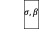
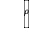
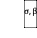
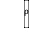
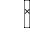

附录3-1. 使用Runge-Kutta格式积分Lorenz63模式的代码
|
import numpy
as np # 导入numpy工具包 def
Lorenz63(state,*args): # 此函数定义Lorenz63模式右端项 sigma = args[0] beta = args[1] rho = args[2] # 输入和三个模式参数 x, y, z = state # 输入矢量的三个分量分别为方程式中的x,y,z f = np.zeros(3) # f定义为右端 f[0] = sigma * (y - x) # （3-37） f[1] = x * (rho - z) - y # （3-38） f[2] = x * y - beta * z # （3-39） return f def
RK4(rhs,state,dt,*args): # 此函数提供Runge-Kutta积分格式 k1 = rhs(state,*args) k2 = rhs(state+k1*dt/2,*args) k3 = rhs(state+k2*dt/2,*args) k4 = rhs(state+k3*dt,*args) new_state = state +
(dt/6)*(k1+2*k2+2*k3+k4) return new_state # Runge-Kutta法参考余德浩等《微分方程数值解法》（科学出版社） ## 以下代码仅用于展示如何调用模式积分，并画图展示模式自由积分特性 sigma =
10.0; beta = 8.0/3.0; rho = 28.0
# 模式参数值 dt =
0.01
# 模式积分步长 x0True =
np.array([1,1,1]) #
模式积分的初值 xTrue =
np.zeros([3,5001]) #
模式积分值 xTrue[:,0] =
x0True # 设置积分初值 for k in
range(5000): xTrue[:,k+1] =
RK4(Lorenz63,xTrue[:,k],dt,sigma,beta,rho)
# 模式积分 import
matplotlib.pyplot as plt
# 调用画图包 fig =
plt.figure(figsize=(8,8)) ax =
plt.axes(projection='3d') ax.plot3D(xTrue[0],xTrue[1],xTrue[2]) # 三维画图并设置坐标 ax.set_xlabel('x',fontsize=16) ax.set_ylabel('y',fontsize=16) ax.set_zlabel('z',fontsize=16) plt.xticks(fontsize=16);plt.yticks(fontsize=16) ax.set_zticks(np.arange(0,50,10));ax.set_zticklabels(np.arange(0,50,10),fontsize=16) plt.show() |
附录3-2 Lorenz63模式真值试验和观测构造
|
#%% 3-2
Lorenz63模式真值试验和观测构造 sigma =
10.0; beta = 8.0/3.0; rho = 28.0
# 模式参数值 dt =
0.01
# 模式积分步长 n = 3 # 状态维数 m = 3 # 观测数 tm = 10 # 同化试验窗口 nt =
int(tm/dt)
# 总积分步数 t =
np.linspace(0,tm,nt+1)
# 模式时间网格 x0True =
np.array([1,1,1]) #
真值的初值 np.random.seed(seed=1) # 设置随机种子 sig_m=
0.15 # 观测误差标准差 R =
sig_m**2*np.eye(n)
# 观测误差协方差矩阵 dt_m =
0.2 # 观测之间的时间间隔（可见为20模式步） tm_m =
10 # 最大观测时间（可小于模式积分时间） nt_m =
int(tm_m/dt_m) # 进行同化的总次数 ind_m =
(np.linspace(int(dt_m/dt),int(tm_m/dt),nt_m)).astype(int) # 观测网格在时间网格中的指标 t_m =
t[ind_m] # 观测网格 def
h(x): # 定义观测算子 H = np.eye(n) # 观测矩阵为单位阵 yo = H@x # 单位阵乘以状态变量 return yo xTrue =
np.zeros([n,nt+1]) # 真值保存在xTrue变量中 xTrue[:,0] =
x0True # 初始化真值 km = 0 # 观测计数 yo =
np.zeros([3,nt_m]) # 观测保存在yo变量中 for k in
range(nt): # 按模式时间网格开展模式积分循环 xTrue[:,k+1] =
RK4(Lorenz63,xTrue[:,k],dt,sigma,beta,rho)
# 真值积分 if (km<nt_m) and
(k+1==ind_m[km]): # 用指标判断是否进行观测 yo[:,km] = h(xTrue[:,k+1]) +
np.random.normal(0,sig_m,[3,]) #采样造观测 km = km+1 # 观测计数 ## 以下提供真值和观测画图的参考脚本 import
matplotlib.pyplot as plt plt.rcParams['font.sans-serif']
= ['Songti SC'] plt.figure(figsize=(10,6)) lbs =
['x','y','z'] for j in
range(3): plt.subplot(3,1,j+1) plt.plot(t,xTrue[j],'b-',lw=2,label='真值')
plt.plot(t_m,yo[j],'go',ms=8,markerfacecolor='white',label='观测') plt.ylabel(lbs[j],fontsize=16)
plt.xticks(fontsize=16);plt.yticks(fontsize=16) if j==0: plt.legend(ncol=4, loc=9,fontsize=16) plt.title('L63模式观测模拟',fontsize=16) if j==2: plt.xlabel('时间（TU）',fontsize=16) |
附录3-3 Lorenz63模式的切线模式
|
def
JLorenz63(state,*args): #
Lorenz63 方程雅克比矩阵 sigma = args[0] beta = args[1] rho = args[2] x, y, z = state df = np.zeros([3,3]) # 以下是切线矩阵的9个元素配置 df[0,0] = sigma * (-1) df[0,1] = sigma * (1) df[0,2] = sigma * (0) df[1,0] = 1 * (rho - z) df[1,1] = -1 df[1,2] = x * (-1) df[2,0] = 1 * y df[2,1] = x * 1 df[2,2] = - beta return df def
JRK4(rhs,Jrhs,state,dt,*args): # 切线模式的积分格式 n = len(state) k1 = rhs(state,*args) k2 = rhs(state+k1*dt/2,*args) k3 = rhs(state+k2*dt/2,*args) # 以下是对矩阵的Runge-Kutta格式 dk1 = Jrhs(state,*args) dk2 = Jrhs(state+k1*dt/2,*args) @
(np.eye(n)+dk1*dt/2) dk3 = Jrhs(state+k2*dt/2,*args) @
(np.eye(n)+dk2*dt/2) dk4 = Jrhs(state+k3*dt,*args) @
(np.eye(n)+dk3*dt) DM = np.eye(n) + (dt/6) *
(dk1+2*dk2+2*dk3+dk4) return DM |
附录3-4 线性观测矩阵
|
def
Dh(x): # 观测算子的线性观测矩阵 n = len(x) H = np.eye(n) return H |
附录3-5 扩展卡尔曼滤波器的分析算法
|
def
EKF(xb,yo,ObsOp,JObsOp,R,B): # 输入的变量分别为：xb预报、yo观测、ObsOp观测算子、JObsOp切线观测算子，R观测误差协方差，B背景误差协方差。 n = xb.shape[0] # 状态空间维数 Dh = JObsOp(xb) # 计算线性观测矩阵 D = Dh@B@Dh.T + R K = B @ Dh.T @ np.linalg.inv(D) #
卡尔曼增益矩阵 xa = xb + K @ (yo-ObsOp(xb)) # 更新状态 P = (np.eye(n) - K@Dh) @ B # 更新误差协方差矩阵 return xa, P # 输出分析状态场和分析误差协方差矩阵 |
附录3-6 Lorenz63模式中的EKF同化试验
|
x0b =
np.array([2.0,3.0,4.0]) # 同化试验的初值 np.random.seed(seed=1) # 设置随机种子 xb =
np.zeros([3,nt+1]); xb[:,0] = x0b # 控制试验结果存在xb中 for k in
range(nt): # 模式积分循环 xb[:,k+1] =
RK4(Lorenz63,xb[:,k],dt,sigma,beta,rho)
# 不加同化的自由积分结果 sig_b=
0.1 # 设定初始的背景误差 B =
sig_b**2*np.eye(3) # 初始背景误差协方差矩阵 Q =
0.0*np.eye(3) # 设置模式误差（若假设完美模式则取0） xa =
np.zeros([3,nt+1]); xa[:,0] = x0b #
同化试验结果存在xa中 km = 0 # 同化次数计数 for k in
range(nt): # 模式积分循环 xa[:,k+1] =
RK4(Lorenz63,xa[:,k],dt,sigma,beta,rho) # 用非线性模式积分 DM =
JRK4(Lorenz63,JLorenz63,xa[:,k],dt,sigma,beta,rho) # 使用切线模式积分 B = DM @ B @ DM.T + Q # 积分过程协方差更新 if (km<nt_m) and
(k+1==ind_m[km]): # 当有观测时，使用EKF同化 xa[:,k+1],B =
EKF(xa[:,k+1],yo[:,km],h,Dh,R,B) #调用EKF，更新状态和协方差 km = km+1 # EKF结果画图 plt.figure(figsize=(10,8)) lbs =
['x','y','z'] for j in
range(3): plt.subplot(4,1,j+1) plt.plot(t,xTrue[j],'b-',lw=2,label='真值')
plt.plot(t,xb[j],'--',color='orange',lw=2,label='背景')
plt.plot(t_m,yo[j],'go',ms=8,markerfacecolor='white',label='观测')
plt.plot(t,xa[j],'-.',color='red',lw=2,label='分析') plt.ylabel(lbs[j],fontsize=16)
plt.xticks(fontsize=16);plt.yticks(fontsize=16) if j==0: plt.legend(ncol=4, loc=9,fontsize=16) plt.title("EKF同化试验",fontsize=16) RMSEb =
np.sqrt(np.mean((xb-xTrue)**2,0)) RMSEa =
np.sqrt(np.mean((xa-xTrue)**2,0)) plt.subplot(4,1,4) plt.plot(t,RMSEb,color='orange',label='背景均方根误差') plt.plot(t,RMSEa,color='red',label='分析均方根误差') plt.legend(ncol=2,
loc=9,fontsize=16) plt.text(1,9,'背景误差平均 = %0.2f' %np.mean(RMSEb),fontsize=14) plt.text(1,4,'分析误差平均 = %0.2f' %np.mean(RMSEa),fontsize=14) plt.ylabel('均方根误差',fontsize=16) plt.xlabel('时间（TU）',fontsize=16) plt.xticks(fontsize=16);plt.yticks(fontsize=16) |
附录4-1 Lorenz63模式代码和孪生试验的观测模拟过程（同第3章）
|
import numpy
as np # 导入numpy工具包 def
Lorenz63(state,*args): # 此函数定义Lorenz63模式右端项 sigma = args[0] beta = args[1] rho = args[2] # 输入和三个模式参数 x, y, z = state # 输入矢量的三个分量分别为方程式中的x,y,z f = np.zeros(3) # f定义为右端 f[0] = sigma * (y - x) # （方程1） f[1] = x * (rho - z) - y # （方程2） f[2] = x * y - beta * z # （方程3） return f def
RK4(rhs,state,dt,*args): # 此函数提供Runge-Kutta积分格式 k1 = rhs(state,*args) k2 = rhs(state+k1*dt/2,*args) k3 = rhs(state+k2*dt/2,*args) k4 = rhs(state+k3*dt,*args) new_state = state +
(dt/6)*(k1+2*k2+2*k3+k4) return new_state # 以下代码构造孪生试验的观测真实解和观测数据
sigma =
10.0; beta = 8.0/3.0; rho = 28.0
# 模式参数值 dt =
0.01
# 模式积分步长 n = 3 # 状态维数 m = 3 # 观测数 tm = 10 # 同化试验窗口 nt =
int(tm/dt)
# 总积分步数 t =
np.linspace(0,tm,nt+1)
# 模式时间网格 x0True =
np.array([1,1,1]) # 真值的初值 np.random.seed(seed=1) # 设置随机种子 sig_m=
0.15 # 观测误差标准差 R =
sig_m**2*np.eye(n) # 观测误差协方差矩阵 dt_m =
0.2 # 观测之间的时间间隔（可见为20模式步） tm_m =
10 # 最大观测时间（可小于模式积分时间） nt_m =
int(tm_m/dt_m) # 进行同化的总次数 ind_m =
(np.linspace(int(dt_m/dt),int(tm_m/dt),nt_m)).astype(int) # 观测网格在时间网格中的指标 t_m =
t[ind_m] # 观测网格 def
h(x): # 定义观测算子 H =
np.eye(n) # 观测矩阵为单位阵 yo = H@x # 单位阵乘以状态变量 return yo def
Dh(x): # 观测算子的线性观测矩阵 n = len(x) D = np.eye(n) return D xTrue =
np.zeros([n,nt+1]) # 真值保存在xTrue变量中 xTrue[:,0] =
x0True # 初始化真值 km = 0 # 观测计数 yo =
np.zeros([3,nt_m]) # 观测保存在yo变量中 for k in
range(nt): # 按模式时间网格开展模式积分循环 xTrue[:,k+1] =
RK4(Lorenz63,xTrue[:,k],dt,sigma,beta,rho)
# 真值积分 if (km<nt_m) and
(k+1==ind_m[km]): # 用指标判断是否进行观测 yo[:,km] = h(xTrue[:,k+1]) +
np.random.normal(0,sig_m,[3,]) #采样造观测 km = km+1 # 观测计数 |
附录4-2 集合卡尔曼滤波器的分析算法
|
def
EnKF(xbi,yo,ObsOp,JObsOp,R): # 输入变量依次为预报集合、观测、观测算子、切线观测算子、观测误差协方差 n,N = xbi.shape # n-状态维数，N-集合成员数 m = yo.shape[0] # m-观测维数 xb =
np.mean(xbi,1) # 计算预报集合平均 Dh = JObsOp(xb) # 利用切线性观测算子得到观测矩阵H B = (1/(N-1)) * (xbi - xb.reshape(-1,1))
@ (xbi - xb.reshape(-1,1)).T #背景误差协方差 D = Dh@B@Dh.T + R K = B @ Dh.T @ np.linalg.inv(D) #计算卡尔曼增益矩阵 yoi = np.zeros([m,N]) # 预分配空间，保存扰动后的观测集合 xai = np.zeros([n,N]) # 预分配空间，保存分析集合 for i in range(N): yoi[:,i] = yo +
np.random.multivariate_normal(np.zeros(m), R) # 随机扰动观测 xai[:,i] = xbi[:,i] + K @
(yoi[:,i]-ObsOp(xbi[:,i]))
# 更新每个成员 return xai # 输出集合成员。不同于EKF，不需要输出分析误差协方差 |
附录4-3 集合卡尔曼滤波器同化试验及结果
|
n = 3 # 状态维数 m = 3 # 观测数 x0b =
np.array([2.0,3.0,4.0]) # 同化试验的初值 np.random.seed(seed=1) # 初始化随机种子，便于重复结果 xb =
np.zeros([n,nt+1]); xb[:,0] = x0b for k in range(nt): # xb得到的是不加同化的自由积分结果 xb[:,k+1] =
RK4(Lorenz63,xb[:,k],dt,sigma,beta,rho)
sig_b= 0.1 B =
sig_b**2*np.eye(n) # 初始时刻背景误差协方差，设为对角阵 Q =
0.0*np.eye(n) # 模式误差（若假设完美模式则取0） N = 20 # 设定集合成员数 xai =
np.zeros([3,N]) # 设定集合，保存在xai中 for i in
range(N): xai[:,i] = x0b +
np.random.multivariate_normal(np.zeros(n), B) # 通过对预报初值进行随机扰动构造初始集合 xa =
np.zeros([n,nt+1]); xa[:,0] = x0b #保存每步的集合均值作为分析场，存在xa km = 0 # 对同化次数进行计数 for k in
range(nt): # 时间积分 for i in range(N): # 对每个集合成员积分 xai[:,i] =
RK4(Lorenz63,xai[:,i],dt,sigma,beta,rho) \ +
np.random.multivariate_normal(np.zeros(n), Q) # 积分每个集合成员得到预报集合 if (km<nt_m) and
(k+1==ind_m[km]): # 当有观测的时刻，使用EnKF同化 xai = EnKF(xai,yo[:,km],h,Dh,R) # 调用EnKF同化 km = km+1 xa[:,k+1] = np.mean(xai,1) #非同化时刻使用预报平均，同化时刻分析平均 # EnKF结果画图 import
matplotlib.pyplot as plt plt.rcParams['font.sans-serif']
= ['Songti SC'] plt.rcParams['axes.unicode_minus']=False # 用来正常显示负号 plt.figure(figsize=(10,8)) lbs =
['x','y','z'] for j in
range(3): plt.subplot(4,1,j+1) plt.plot(t,xTrue[j],'b-',lw=2,label='真值')
plt.plot(t,xb[j],'--',color='orange',lw=2,label='背景')
plt.plot(t_m,yo[j],'go',ms=8,markerfacecolor='white',label='观测')
plt.plot(t,xa[j],'-.',color='red',lw=2,label='分析') plt.ylabel(lbs[j],fontsize=15)
plt.xticks(fontsize=16);plt.yticks(fontsize=16) if j==0: plt.legend(ncol=4, loc=9,fontsize=15) plt.title("EnKF同化试验",fontsize=16) RMSEb =
np.sqrt(np.mean((xb-xTrue)**2,0)) RMSEa =
np.sqrt(np.mean((xa-xTrue)**2,0)) plt.subplot(4,1,4) plt.plot(t,RMSEb,color='orange',label='背景均方根误差') plt.plot(t,RMSEa,color='red',label='分析均方根误差') plt.legend(ncol=2,
loc=9,fontsize=16) plt.text(1,9,'背景误差平均 = %0.2f' %np.mean(RMSEb),fontsize=14) plt.text(1,4,'分析误差平均 = %0.2f' %np.mean(RMSEa),fontsize=14) plt.ylabel('均方根误差',fontsize=16) plt.xlabel('时间（TU）',fontsize=16) plt.xticks(fontsize=16);plt.yticks(fontsize=16)
|
附录4-4 集合卡尔曼滤波器高维格式的代码
|
def
EnKFhe(xbi,yo,ObsOp,JObsOp,R): from numpy.linalg import svd n,N = xbi.shape # n-状态维数，N-集合成员数 m = yo.shape[0] # m-观测维数 xb = np.mean(xbi,1) #
预报集合平均 Dh = JObsOp(xb) # 切线性观测算子 Y = np.zeros([m,N]) #
观测扰动量保存于Y中 hxbi = np.zeros([m,N]) # 集合成员投影 for i in range(N): Y[:,i] =
np.random.multivariate_normal(np.zeros(m), R) hxbi[:,i] = ObsOp(xbi[:,i]) #投影到观测空间 Dp = Y+yo.reshape(-1,1)-hxbi #更新量 A = xbi - xb.reshape(-1,1) #
集合异常 U,Sig,V = svd(Dh@A+Y) # 做SVD分解 Lam_m1 = np.diag(1/Sig**2) # 奇异值平方的倒数 X1 = Lam_m1@U.T # 公式（4-40） X2 = X1@Dp # 公式（4-41） X3 = U@X2 # 公式（4-42） X4 = (Dh@A).T@X3 # 公式（4-43） xai = xbi + A@X4 # 公式（4-44） return xai |
附录5-1 Lorenz96模式的积分算子和观测算子
|
import numpy
as np def
Lorenz96(state,*args):
# 定义Lorenz 96模式右端项 x = state # 模式状态记为x F = args[0] # 输入外强迫 n = len(x) # 状态空间维数 f = np.zeros(n) f[0] = (x[1] - x[n-2]) * x[n-1] -
x[0] # 处理三个边界点: i=0,1,N-1 f[1] = (x[2] - x[n-1]) * x[0] - x[1] # 导入周期边界条件 f[n-1] = (x[0] - x[n-3]) * x[n-2] -
x[n-1] for i in range(2, n-1): f[i] = (x[i+1] - x[i-2]) * x[i-1] -
x[i] # 内部点符合方程（9） f = f + F # 加上外强迫 return f def
RK4(rhs,state,dt,*args):
# 使用Runge-Kutta方法求解（同L63） k1 = rhs(state,*args) k2 = rhs(state+k1*dt/2,*args) k3 = rhs(state+k2*dt/2,*args) k4 = rhs(state+k3*dt,*args) new_state = state +
(dt/6)*(k1+2*k2+2*k3+k4) return new_state def
h(x):
# 观测算子(假设只观测部分变量) n= x.shape[0] # 状态维数 m= 9 # 总观测数 H = np.zeros((m,n)) # 设定观测算子 di = int(n/m) # 两个观测之间的空间距离 for i in range(m): H[i,(i+1)*di-1] = 1 # 通过设置观测位置给出观测矩阵 z = H @ x # 左乘观测矩阵得到观测算子 return z # 以下求出的线性化观测算子实际上就是输出观测矩阵。 def Dh(x): n= x.shape[0] m= 9 H = np.zeros((m,n)) di = int(n/m) for i in range(m): H[i,(i+1)*di-1] = 1 return H |
附录5-2 Lorenz96模式的真值积分和观测模拟
|
n = 36 # 状态空间维数 F = 8 # 外强迫项 dt =
0.01 # 积分步长 # 1. spinup获取真实场初值: 从 t=-20 积分到 t =
0 以获取试验初值 x0 = F * np.ones(n) # 初值 x0[19] =
x0[19] + 0.01 # 在第20个变量上增加微小扰动 x0True = x0 nt1 =
int(20/dt) for k in
range(nt1): x0True = RK4(Lorenz96,x0True,dt,F) #从t=-20积分到t=0 # 2. 真值试验和观测的信息 tm = 20 # 试验窗口长度 nt =
int(tm/dt) # 积分步数 t =
np.linspace(0,tm,nt+1) np.random.seed(seed=1) m = 9 # 观测变量数 dt_m =
0.2 # 两次观测之间的时间 tm_m =
20 # 最大观测时间 nt_m =
int(tm_m/dt_m) # 同化次数 ind_m =
(np.linspace(int(dt_m/dt),int(tm_m/dt),nt_m)).astype(int) t_m =
t[ind_m] sig_m=
0.1 # 观测误差标准差 R =
sig_m**2*np.eye(m) # 观测误差协方差 # 3. 造真值和观测 xTrue =
np.zeros([n,nt+1]) xTrue[:,0] =
x0True km = 0 yo =
np.zeros([m,nt_m]) for k in
range(nt): xTrue[:,k+1] =
RK4(Lorenz96,xTrue[:,k],dt,F) # 真值 if (km<nt_m) and (k+1==ind_m[km]): yo[:,km] = h(xTrue[:,k+1]) +
np.random.normal(0,sig_m,[m,]) # 加噪声得到观测 km = km+1 |
附录5-3 G-C函数和局地化矩阵
|
def comp_cov_factor(z_in,c):
z=abs(z_in); # 输入距离和局地化参数，输出局地化因子的数值 if z<=c: # 分段函数的各个条件 r = z/c; cov_factor=((( -0.25*r +0.5)*r
+0.625)*r -5.0/3.0)*r**2 + 1.0; elif z>=c*2.0: cov_factor=0.0; else: r = z / c; cov_factor = ((((r/12.0 -0.5)*r
+0.625)*r +5.0/3.0)*r -5.0)*r + 4.0 - 2.0 / (3.0 * r); return cov_factor def
Rho(localP,size): from scipy.linalg import toeplitz rho0 = np.zeros(size) for j in range(size): rho0[j]=comp_cov_factor(j,localP) Loc = toeplitz(rho0,rho0) return Loc |
附录5-4 使用输入的局地化矩阵的EnKF同化方法
|
def
EnKF(xbi,yo,ObsOp,JObsOp,R,RhoM): n,N = xbi.shape # n-状态维数，N-集合成员数 m = yo.shape[0] # m-观测维数 xb = np.mean(xbi,1) # 预报集合平均 Dh = JObsOp(xb) # 切线性观测算子 B = (1/(N-1)) * (xbi - xb.reshape(-1,1))
@ (xbi - xb.reshape(-1,1)).T # 样本协方差 B = RhoM * B # !!!Shur积局地化 D = Dh@B@Dh.T + R K = B @ Dh.T @ np.linalg.inv(D) # 求卡尔曼增益矩阵 yoi = np.zeros([m,N]) xai = np.zeros([n,N]) for i in range(N): yoi[:,i] = yo +
np.random.multivariate_normal(np.zeros(m), R) # 扰动观测 xai[:,i] = xbi[:,i] + K @
(yoi[:,i]-ObsOp(xbi[:,i])) # 卡尔曼滤波更新 return xai |
附录5-5 Lorenz96模式使用含有局地化的EnKF的同化试验
|
sig_b= 1 x0b = x0True
+ np.random.normal(0,sig_b,[n,]) # 初值 B =
sig_b**2*np.eye(n) # 初始误差协方差 sig_p= 0.1 Q =
sig_p**2*np.eye(n) # 模式误差 xb =
np.zeros([n,nt+1]); xb[:,0] = x0b for k in range(nt): xb[:,k+1] =
RK4(Lorenz96,xb[:,k],dt,F) # 控制试验 N = 30 # 集合成员数 xai =
np.zeros([n,N]) for i in
range(N): xai[:,i] = x0b +
np.random.multivariate_normal(np.zeros(n), B)
# 初始集合 np.random.seed(seed=1)
localP = 4;
rhom = Rho(localP ,n) # !!!产生局地化矩阵 xa =
np.zeros([n,nt+1]); xa[:,0] = x0b km = 0 for k in
range(nt): for i in range(N): # 集合预报 xai[:,i] =
RK4(Lorenz96,xai[:,i],dt,F) \ +
np.random.multivariate_normal(np.zeros(n), Q) xa[:,k+1] = np.mean(xai,1) if (km<nt_m) and
(k+1==ind_m[km]): # 开始同化 xai = EnKF(xai,yo[:,km],h,Dh,R,rhom) xa[:,k+1] = np.mean(xai,1) km = km+1 RMSEb = np.sqrt(np.mean((xb-xTrue)**2,0)) RMSEa =
np.sqrt(np.mean((xa-xTrue)**2,0)) mRMSEb =
np.mean(RMSEb) mRMSEa =
np.mean(RMSEa) ## 画图相关代码 import
matplotlib.pyplot as plt plt.rcParams['font.sans-serif']
= ['Songti SC'] plt.figure(figsize=(10,7)) plt.subplot(4,1,1) plt.plot(t,xTrue[8,:],
label='真值', linewidth = 3, color='C0') plt.plot(t,xb[8,:],
':', label='背景', linewidth = 3, color='C1') plt.plot(t,xa[8,:],
'--', label='分析', linewidth = 3, color='C3') plt.ylabel(r'$X_{9}(t)$',labelpad=7,fontsize=16) plt.xticks(range(0,20,5),[],fontsize=16);plt.yticks(fontsize=16) plt.title("Lorenz96模式的局地化EnKF同化",fontsize=16) plt.legend(loc=9,ncol=4,fontsize=15) plt.subplot(4,1,2) plt.plot(t,xTrue[17,:],
label='真值', linewidth = 3, color='C0') plt.plot(t,xb[17,:],
':', label='背景', linewidth = 3, color='C1') plt.plot(t,xa[17,:],
'--', label='分析', linewidth = 3, color='C3') plt.ylabel(r'$X_{18}(t)$',
labelpad=7,fontsize=16) plt.xticks(range(0,20,5),[],fontsize=16);plt.yticks(fontsize=16) plt.legend(loc=9,ncol=4,fontsize=15) plt.subplot(4,1,3) plt.plot(t,xTrue[35,:],
label='真值', linewidth = 3, color='C0') plt.plot(t,xb[35,:],
':', label='背景', linewidth = 3, color='C1') plt.plot(t[ind_m],yo[8,:],
'o', fillstyle='none', \ label='观测', markersize = 8, markeredgewidth = 2, color='C2') plt.plot(t,xa[35,:],
'--', label='分析', linewidth = 3, color='C3') plt.ylim(-8,18) plt.ylabel(r'$X_{36}(t)$',
labelpad=7,fontsize=16) plt.xticks(range(0,20,5),[],fontsize=16);plt.yticks(fontsize=16) plt.legend(loc=9,ncol=4,fontsize=15) plt.subplot(4,1,4) plt.plot(t,RMSEb,color='C1',label='背景均方根误差') plt.plot(t,RMSEa,color='C3',label='分析均方根误差') plt.text(2,1.5,'集合尺寸 = %.1f'%N + ', 局地化参数 =
%0.1f'%localP,fontsize=13) plt.text(2,3.5,'背景误差平均值 = %.3f'%mRMSEb +', 分析误差平均值 =
%.3f'%mRMSEa,fontsize=13) plt.ylim(0,10) plt.ylabel('均方根误差',labelpad=7,fontsize=16); plt.xlabel('时间（TU）',fontsize=16) plt.legend(loc=9,ncol=2,fontsize=15) plt.xticks(range(0,20,5),fontsize=16);plt.yticks(fontsize=16) plt.show() |
附录5-6 伪随机场产生代码
|
def
func(sig2,rh,kappa,gamma): # 求解函数得到 sig2 import numpy as np [Kappa,Gamma] = np.meshgrid(kappa,gamma) ekr = np.exp(-2*(Kappa**2+Gamma**2)/sig2) ekr_cos = ekr*np.cos(Kappa*rh) output = np.exp(-1) -
np.sum(ekr_cos)/np.sum(ekr) return output def
generateQ(Nlon,Mlat,rh): #依据Evensen(1994)附录中的方法使用快速傅里叶 #转换方法，得到空间上平滑的伪随机场 #N 和 M 为奇数 #Nlon = 361; Mlat = 181; rh=2 import numpy as np N = Nlon; M = Mlat x = np.linspace(0,360,N)#表示经度 y = np.linspace(-90,90,M)#表示纬度 dx = x[1]-x[0]; dy = y[1]-y[0]#网格大小 kappa =
2*np.pi*(np.arange(1,1+N)-N//2-1)/(N*dx) gamma =
2*np.pi*(np.arange(1,1+M)-M//2-1)/(M*dy) dk = (2*np.pi)**2/(M*N*dx*dy) from scipy.optimize import fsolve sig2 = fsolve(lambda
x:func(x,rh,kappa,gamma),1) Kappa,Gamma = np.meshgrid(kappa,gamma) ekr_sig2 =
np.exp(-2*(Kappa**2+Gamma**2)*sig2) c2 = 1/dk/np.sum(ekr_sig2) c = np.sqrt(c2) Phi = -np.random.rand(M,N) for i in range(M//2): Phi[i] = -Phi[-i-1][-1::-1] Phi[M//2][range(N//2)] =
-Phi[M//2][-1:N//2:-1] Phi[M//2][N//2]=0 qhat =
np.exp(2j*np.pi*Phi-(Kappa**2+Gamma**2)/sig2)*c/np.sqrt(dk) Q = np.fft.ifft2(np.fft.ifftshift(qhat)) Qr = np.real(Q) return Qr,x,y |
附录6-1 集合平方根滤波器（直接法）
|
def
EnSRF(xbi,yo,ObsOp,JObsOp,R): from scipy.linalg import sqrtm n,N = xbi.shape # n-状态维数，N-集合成员数 m = yo.shape[0] # m-观测维数 xb = np.mean(xbi,1) # 预报集合平均 Dh = JObsOp(xb) # 切线观测算子 B = (1/(N-1)) * (xbi - xb.reshape(-1,1))
@ (xbi - xb.reshape(-1,1)).T D = Dh@B@Dh.T + R K = B @ Dh.T @ np.linalg.inv(D) # !!!以上与EnKF一致 xa = xb + K @ (yo-ObsOp(xb)) # 用确定性格式更新集合平均 A = xbi - xb.reshape(-1,1) # 集合异常 Z = A/np.sqrt(N-1) # 标准化集合异常值 Y = np.linalg.inv(D)@Dh@Z X = sqrtm(np.eye(N)-(Dh@Z).T@Y) # 矩阵平方根 X = np.real(X) # 保证矩阵平方根为实数 Z = Z@X # 更新集合异常值 A = Z*np.sqrt(N-1) xai = xa.reshape(-1,1)+A # 用集合平均和集合异常计算集合成员 return xai |
附录6-2 集合平方根卡尔曼滤波器(串行格式)
|
def
sEnSRF(xbi,yo,ObsOp,JObsOp,R): n,N = xbi.shape # n-状态维数，N-集合成员数 m = yo.shape[0] # m-观测维数 xb = np.mean(xbi,1) # 预报集合平均 Dh = JObsOp(xb) # 切线观测算子 B = (1/(N-1)) * (xbi - xb.reshape(-1,1))
@ (xbi - xb.reshape(-1,1)).T D = Dh@B@Dh.T + R K = B @ Dh.T @ np.linalg.inv(D) #
!!!以上与EnKF一致 xa = xb + K @ (yo-ObsOp(xb)) # 用确定性格式更新集合平均 A = xbi - xb.reshape(-1,1) # 集合异常 Z = A/np.sqrt(N-1) # 标准化集合异常值 V = (Dh@Z).T for j in range(m): #
根据每个观测循环 Dj = V[:,j].T @ V[:,j] + R[j,j] betaj = 1/(Dj+np.sqrt(R[j,j]*Dj)) Z =
Z@(np.eye(N)-betaj*V[:,j]@V[:,j].T)
# 集合异常更新公式 A = Z*np.sqrt(N-1) xai = xa.reshape(-1,1)+A # 用集合平均和集合异常计算集合成员 return xai |
附录6-3 集合转换卡尔曼滤波器
|
def
ETKF(xbi,yo,ObsOp,JObsOp,R): n,N = xbi.shape # n-状态维数，N-集合成员数 m = yo.shape[0] # m-观测维数 xb = np.mean(xbi,1) # 预报集合平均 Dh = JObsOp(xb) # 切线观测算子 B = (1/(N-1)) * (xbi - xb.reshape(-1,1))
@ (xbi - xb.reshape(-1,1)).T D = Dh@B@Dh.T + R K = B @ Dh.T @ np.linalg.inv(D) # !!!以上与EnKF一致 xa = xb + K @ (yo-ObsOp(xb)) # 用确定性格式更新集合平均 A = xbi - xb.reshape(-1,1) # 集合异常 Z = A/np.sqrt(N-1) # 标准化集合异常值 V = (Dh@Z).T CTC = V@np.linalg.inv(R)@V.T Gamma, C = np.linalg.eig(CTC) Gamma = np.real(Gamma);C =
np.real(C) Z = Z@C@np.diag((Gamma+1)**(-0.5)) # 集合异常更新公式（6-26） A = Z*np.sqrt(N-1) xai = xa.reshape(-1,1)+A # 用集合平均和集合异常计算集合成员 return xai |
附录6-4 集合调整卡尔曼滤波器
|
def
EAKF(xbi,yo,ObsOp,JObsOp,R): n,N = xbi.shape # n-状态维数，N-集合成员数 m = yo.shape[0] # m-观测维数 xb = np.mean(xbi,1) # 预报集合平均 Dh = JObsOp(xb) # 切线观测算子 B = (1/(N-1)) * (xbi - xb.reshape(-1,1))
@ (xbi - xb.reshape(-1,1)).T D = Dh@B@Dh.T + R K = B @ Dh.T @ np.linalg.inv(D) # !!!以上与EnKF一致 xa = xb + K @ (yo-ObsOp(xb)) # 用确定性格式更新集合平均 A = xbi - xb.reshape(-1,1) #
集合异常 Z = A/np.sqrt(N-1) # 标准化集合异常值 V = (Dh@Z).T CTC = V@np.linalg.inv(R)@V.T Gamma, C = np.linalg.eig(CTC) Gamma = np.real(Gamma);C =
np.real(C) F,G,U = np.linalg.svd(Z) IG2 = np.diag((Gamma+1)**(-0.5)) Gtilde =
np.concatenate([np.diag(1/G),np.zeros([N-m,m])],0) # !!!公式（6-29） Adj = Z@C@IG2@Gtilde@F.T # !!!公式（6-30） Z = Adj@Z # 公式（6-27） A = Z*np.sqrt(N-1) xai = xa.reshape(-1,1)+A # 用集合平均和集合异常计算集合成员 return xai |
附录6-5 局地集合转换卡尔曼滤波器（LETKF）算法应用代码
|
# 导入所需工具包 import numpy
as np import
matplotlib.pyplot as plt from scipy
import linalg import scipy #
Runge-Kutta格式求解Lorenz 63模式dX/dt = f(t,X) def
RK4(rhs,state,dt,*args): k1 = rhs(state,*args) k2 = rhs(state+k1*dt/2,*args) k3 = rhs(state+k2*dt/2,*args) k4 = rhs(state+k3*dt,*args) new_state = state +
(dt/6)*(k1+2*k2+2*k3+k4) return new_state # Lorenz 63 模式 def
Lorenz63(state,*args): # 三个模式参数 sigma = args[0][0] beta = args[0][1] rho = args[0][2] q=args[1] x, y, z = state #状态变量分量 f = np.zeros(3) #定义右端项 # Lorenz 63模式方程 f[0] = sigma * (y - x) f[1] = x * (rho - z) - y f[2] = x * y - beta * z f=f+q return f def
h(u): # 观测算子 H=np.eye(3) w=H@u return w # 生成真值 delta_t=0.01 #积分步长 tm = 40 #积分时间 nt =
int(tm/delta_t) T=
np.linspace(0,tm,nt+1) # Lorenz63参数设置 sigma = 10.0 beta =
8.0/3.0 rho = 28.0 param=np.zeros(3) param[0]=sigma param[1]=beta param[2]=rho q0=np.zeros(3) #真值 qb=np.random.randn(3) #模式误差 x0 =
[1.508870, -1.531271, 25.46091]
#初始条件 X =
np.zeros((3,4001)) Xb =
np.zeros((3,4001)) X[:,0]=x0 Xb[:,0]=x0 for j in
range(np.size(X,1)-1): X[:,j+1] = RK4(Lorenz63, X[:,j] ,delta_t
,param,q0) #模式积分 Xb[:,j+1] = RK4(Lorenz63, Xb[:,j]
,delta_t ,param,qb) # 生成观测 Tobs=T[np.arange(25,4025,25)] Yobs =
np.zeros((3,161)) q_obs =
np.random.randn(1,161) Yobs = X
[:,0:4025:25]+q_obs from
numpy.matlib import repmat from
scipy.linalg import sqrtm x = x0 + qb #初始值 N = 30 #集合成员数 q_ensemble=np.sqrt(3)*np.random.randn(3,N) E =
repmat(x,N,1).T+q_ensemble #初始集合：以x为元素，堆叠成1N的大矩阵 Xa=np.zeros(X.shape) R =
np.eye(3) #观测误差方差 var_modelerr=0.01 Ide=np.eye(N) q_pro=np.sqrt(var_modelerr)*np.random.randn(3) # 循环积分模式 for k in
range(4000): for j in range(N): E[:,j]=RK4(Lorenz63, E[:,j]
,delta_t ,param,q_pro) # 如果有观测，进行分析 if k%25==0: y=Yobs[:,round(k/25)] xbb= np.nanmean(E,1).reshape(3,1) H1=h(E) H2=h(xbb) Hp=np.zeros((3,N)) for j in range(N): Hp[:,j]=H1[:,j]-H2.T P1=Hp.T @ np.linalg.inv(R) @ Hp +
(N-1) * Ide; Pa=np.linalg.inv(P1) xbp=np.zeros((3,N)) for j in range(N): xbp[:,j]=E[:,j]-xbb[:,0] K=xbp @ Pa @ Hp.T @
np.linalg.inv(R) xab=xbb + (K @
(y-H2.T).T).reshape(3,1) xap=xbp @ sqrtm((N-1)*Pa) for j in range(N): E[:,j]=xab[:,0]+xap[:,j] #更新状态 Xa[:,k]=np.nanmean(E,1) #计算集合平均，作为分析值：每一行N个计算平均，得到列向量 # 计算均方根误差 RMSEb = np.sqrt(np.mean((Xb-X)**2,0)) RMSEa =
np.sqrt(np.mean((Xa-X)**2,0)) mRMSEb =
np.mean(RMSEb) mRMSEa =
np.mean(RMSEa) print('mRMSEb=%.5f'%mRMSEb) print('mRMSEa=%.5f'%mRMSEa) # 画图展示结果 import
matplotlib as mpl import
matplotlib.pyplot as plt plt.rcParams['font.sans-serif']
= ['Songti SC'] plt.rcParams['axes.unicode_minus']=False # 用来正常显示负号 fig2 =
plt.figure(figsize=(10,11)) ylabel=['x(t)','y(t)','z(t)'] for k in
range(3): ax = plt.subplot(4,1,k+1) ax.plot(T[0:4000],X[k,0:4000], label='真值', linewidth = 3,color='k') ax.plot(T[0:4000],Xb[k,0:4000], ':',
label='背景', linewidth = 3) ax.plot(Tobs,Yobs[k,0:160],
fillstyle='none', \ label='观测', markersize = 8, markeredgewidth = 2,color='r') ax.plot(T,Xa[k,0:4001], label='分析', linewidth = 3,color='g') ax.set_ylabel(r'$'+ylabel[k]+'$',
labelpad=10, fontsize=16)
plt.xticks(fontsize=16);plt.yticks(fontsize=16) if k==0: ax.set_title('LETKF同化结果',fontsize=16) ax.legend(loc="center",
bbox_to_anchor=(0.5,0.9),ncol =4,fontsize=16) ax4 =
plt.subplot(4,1,4) ax4.plot(T,RMSEb,':',label='背景') ax4.plot(T,RMSEa,label='分析',color='g') ax4.legend(loc="upper
right",fontsize=16) ax4.text(6,35,'背景的平均均方根误差 =
%.3f'%mRMSEb,fontsize=16) ax4.text(6,30,'分析的平均均方根误差 =
%.3f'%mRMSEa,fontsize=16) ax4.set_xlabel('时间',fontsize=16) ax4.set_ylabel('均方根误差',fontsize=16) ax4.set_ylim(0,40) plt.xticks(fontsize=16);plt.yticks(fontsize=16) plt.tight_layout() |
附录6-6 串行集合调整卡尔曼滤波器（EAKF）
|
def
obs_increment_eakf(ensemble, observation, obs_error_var): # 1：计算新息 prior_mean = np.mean(ensemble); prior_var = np.var(ensemble); if prior_var >1e-6: # 用于避免退化的先验集合造成错误更新 post_var = 1.0 / (1.0 / prior_var +
1.0 / obs_error_var); post_mean = post_var * (prior_mean /
prior_var + observation / obs_error_var); else: post_var = prior_var; post_mean =
prior_mean; updated_ensemble = ensemble - prior_mean
+ post_mean; var_ratio = post_var / prior_var; updated_ensemble = np.sqrt(var_ratio) *
(updated_ensemble - post_mean) + post_mean; obs_increments = updated_ensemble -
ensemble; return obs_increments def
get_state_increments(state_ens, obs_ens, obs_incs): # 2将观测增量回归到状态增量 covar = np.cov(state_ens, obs_ens); state_incs = obs_incs *
covar[0,1]/covar[1,1]; return state_incs def sEAKF(xai,yo,ObsOp,
R, RhoM): n,N = xai.shape; # 状态维数 m = yo.shape[0]; # 观测数 Loc = ObsOp(RhoM) # 观测空间局地化 for i in range(m): # 针对每个标量观测的循环 hx = ObsOp(xai); # 投影到观测空间 hxi = hx[i]; # 投影到对应的矢量观测，公式（6-56） obs_inc =
obs_increment_eakf(hxi,yo[i],R[i,i]); for j in range(n): # 针对状态变量的每个元素的循环 state_inc =
get_state_increments(xai[j], hxi,obs_inc)
# 获取状态增量 cov_factor=Loc[i,j] # 使用局地化矩阵的相应元素 if cov_factor>1e-6: # 在局地化范围内加增量
xai[j]=xai[j]+cov_factor*state_inc;
# 公式（6-64） return xai |
附录7-1 Lorenz63模式代码和孪生试验的观测模拟过程（同第3章）
|
import numpy as np # 导入numpy工具包 def
Lorenz63(state,*args): # 此函数定义Lorenz63模式右端项 sigma = args[0] beta = args[1] rho = args[2] # 输入和三个模式参数 x, y, z = state # 输入矢量的三个分量分别为方程式中的x,y,z f = np.zeros(3) # f定义为右端 f[0] = sigma * (y - x) f[1] = x * (rho - z) - y f[2] = x * y - beta * z return f def
RK4(rhs,state,dt,*args): # 此函数提供Runge-Kutta积分格式 k1 = rhs(state,*args) k2 = rhs(state+k1*dt/2,*args) k3 = rhs(state+k2*dt/2,*args) k4 = rhs(state+k3*dt,*args) new_state = state +
(dt/6)*(k1+2*k2+2*k3+k4) return new_state # 以下代码构造孪生试验的观测真实解和观测数据
sigma =
10.0; beta = 8.0/3.0; rho = 28.0
# 模式参数值 dt =
0.01
# 模式积分步长 n = 3 # 状态维数 m = 3 # 观测数 tm = 10 # 同化试验窗口 nt =
int(tm/dt)
# 总积分步数 t =
np.linspace(0,tm,nt+1) # 模式时间网格 x0True =
np.array([1,1,1]) # 真值的初值 np.random.seed(seed=1) # 设置随机种子 sig_m=
0.15 # 观测误差标准差 R =
sig_m**2*np.eye(n) # 观测误差协方差矩阵 dt_m =
0.2 # 观测之间的时间间隔（可见为20模式步） tm_m =
10 # 最大观测时间（可小于模式积分时间） nt_m =
int(tm_m/dt_m) # 进行同化的总次数 ind_m =
(np.linspace(int(dt_m/dt),int(tm_m/dt),nt_m)).astype(int) # 观测网格在时间网格中的指标 t_m =
t[ind_m] # 观测网格 def
h(x): # 定义观测算子 H =
np.eye(n)
# 观测矩阵为单位阵 yo = H@x # 单位阵乘以状态变量 return yo def
Dh(x): # 观测算子的线性观测矩阵 n = len(x) D = np.eye(n) return D xTrue =
np.zeros([n,nt+1]) # 真值保存在xTrue变量中 xTrue[:,0] =
x0True
# 初始化真值 km = 0
# 观测计数 yo =
np.zeros([3,nt_m]) # 观测保存在yo变量中 for k in
range(nt):
# 按模式时间网格开展模式积分循环 xTrue[:,k+1] =
RK4(Lorenz63,xTrue[:,k],dt,sigma,beta,rho)
# 真值积分 if (km<nt_m) and
(k+1==ind_m[km]): # 用指标判断是否进行观测 yo[:,km] = h(xTrue[:,k+1]) +
np.random.normal(0,sig_m,[3,]) #采样生成观测 km = km+1 # 观测计数 |
附录7-2 SP-UKF分析算法
|
def
generate_SigmaP(xb,B,Q,R): # 生成sigma点，构建集合 import scipy #导入scipy工具包 n = xb.shape[0] #
n-状态维数 m = R.shape[0] # m-观测误差维数 L = 2*n+m; # L-离散空间状态向量维数 kappa=0;alpha=1;beta0=2 # 确定UKF的参数κ、α、β lam = alpha**2*(L+kappa)-L wm = 0.5/(L+lam)*np.ones(2*L+1) # 计算sigam点权重 wm[0] = lam/(L+lam) wc = 0.5/(L+lam)*np.ones(2*L+1) # 计算sigam点权重 wc[0] = lam/(L+lam)+(1-alpha**2+beta0) theta =
np.concatenate([xb,np.zeros(n+m)]) # 扩充状态向量 Pa = scipy.linalg.block_diag(B,Q,R) # 计算背景误差协方差 sqP=np.linalg.cholesky(Pa) SigmaP = np.zeros([L,2*L+1]) SigmaP[:,0] = theta # 生成sigma点 SigmaP[:,1:(L+1)] = theta.reshape(-1, 1)
+ np.sqrt(L+lam)*sqP SigmaP[:,(L+1):(2*L+1)] =
theta.reshape(-1, 1) - np.sqrt(L+lam)*sqP
xbi = SigmaP[0:n,:]; vi =
SigmaP[n:2*n,:]; ni = SigmaP[2*n::,:] return xbi,vi,ni,wm,wc def
update_SigmaP(xbi,wm,wc,yo,ObsOp,ni): n,N = xbi.shape # n-状态维数，N-集合成员数 m = yo.shape[0] # m-观测维数 ybi = np.zeros([m,N]) # 预分配空间，保存扰动后的观测集合 for i in range(N): # 将状态集合投影道观测空间，构成观测集合 ybi[:,i] = ObsOp(xbi[:,i])+ni[:,i] xbm = np.sum(xbi*wm,1) # 利用sigma点权重计算集合平均 ybm = np.sum(ybi*wm,1) Pxx =
(xbi-xbm.reshape(-1,1))*wc@(xbi-xbm.reshape(-1,1)).T #计算需要的协方差矩阵 Pyy =
(ybi-ybm.reshape(-1,1))*wc@(ybi-ybm.reshape(-1,1)).T Pxy =
(xbi-xbm.reshape(-1,1))*wc@(ybi-ybm.reshape(-1,1)).T K = Pxy @ np.linalg.inv(Pyy) #计算卡尔曼增益矩阵 xa = xbm + K @ (yo-ybm) # 更新状态变量 B = Pxx-K @ Pyy @K.T # 计算下一个同化循环需要的背景误差协方差 return xa,B |
附录7-3 SP-UKF同化试验及结果
|
n = 3 #
状态维数 m = 3 #
观测数 x0b =
np.array([2.0,3.0,4.0]) # 同化试验的初值 np.random.seed(seed=1) # 初始化随机种子，便于重复结果 xb =
np.zeros([n,nt+1]); xb[:,0] = x0b for k in
range(nt): # xb得到的是不加同化的自由积分结果 xb[:,k+1] =
RK4(Lorenz63,xb[:,k],dt,sigma,beta,rho)
sig_b= 0.1 B =
sig_b**2*np.eye(n) # 初始时刻背景误差协方差，设为对角阵 Q = 0.1*np.eye(n) # 模式误差（若假设完美模式则取0） xa =
np.zeros([n,nt+1]); xa[:,0] = x0b
#保存每步的集合均值作为分析场，存在xa km = 0 # 对同化次数进行计数 xbi,vi,ni,wm,wc
= generate_SigmaP(xa[:,0], B, Q, R)
#根据初始条件生成sigma点构成集合 n,N =
xbi.shape
# N集合成员数 for k in
range(nt): # 时间积分 for i in range(N): # 对每个集合成员积分 xbi[:,i] =
RK4(Lorenz63,xbi[:,i],dt,sigma,beta,rho)
# 积分每个集合成员得到预报集合 xa[:,k] = np.sum(xbi*wm,1) # 非同化时刻使用预报平均，同化时刻分析平均 if (km<nt_m) and (k+1==ind_m[km]): # 当有观测时，使用SP-UKF进行更新 xbi = xbi + vi # 在集合成员中加入背景误差 xa[:,k+1],B = update_SigmaP(xbi, wm,
wc, yo[:,km], h, ni) # 调用SP-UKF同化 xbi,vi,ni,wm,wc =
generate_SigmaP(xa[:,k+1], B, Q, R)
# 为下一个同化循环生成集合成员 km = km+1 # UKF结果画图 import
matplotlib.pyplot as plt plt.rcParams['font.sans-serif']
= ['Songti SC'] plt.figure(figsize=(10,8)) lbs =
['x','y','z'] for j in
range(3): plt.subplot(4,1,j+1) plt.plot(t,xTrue[j],'b-',lw=2,label='真值')
plt.plot(t,xb[j],'--',color='orange',lw=2,label='背景')
plt.plot(t_m,yo[j],'go',ms=8,markerfacecolor='white',label='观测')
plt.plot(t,xa[j],'-.',color='red',lw=2,label='分析') plt.ylabel(lbs[j],fontsize=16)
plt.xticks(fontsize=16);plt.yticks(fontsize=16) if j==0: plt.legend(ncol=4, loc=9,fontsize=16) plt.title("SP-UKF同化试验",fontsize=16) RMSEb =
np.sqrt(np.mean((xb-xTrue)**2,0)) RMSEa =
np.sqrt(np.mean((xa-xTrue)**2,0)) plt.subplot(4,1,4) plt.plot(t,RMSEb,color='orange',label='背景均方根误差') plt.plot(t,RMSEa,color='red',label='分析均方根误差') plt.legend(ncol=2,
loc=9,fontsize=16) plt.text(1,9,'背景误差平均 = %0.2f' %np.mean(RMSEb),fontsize=14) plt.text(1,4,'分析误差平均 = %0.2f' %np.mean(RMSEa),fontsize=14) plt.ylabel('均方根误差',fontsize=16) plt.xlabel('时间（TU）',fontsize=16) plt.xticks(fontsize=16);plt.yticks(fontsize=16) |
附录7-4 SP-CDKF分析算法
|
def
time_generate_SigmaP(xb,B,Q):
# 生成时间积分步的sigma点 import scipy # 导入scipy工具包 delta=np.sqrt(3) # 确定中心差分步长h n = xb.shape[0] #
n-状态维数 m = Q.shape[0] # m-背景误差维数 Lx = n Lv = m L=Lx+Lv # L-离散状态空间向量维数 wm = (1/(2*delta**2))*np.ones(2*L+1) # 计算sigma点权重 wm[0] = (delta**2-Lx-Lv)/delta**2 wc1 = (1/(4*delta**2))*np.ones(2*L+1) wc2 =
((delta**2-1)/(4*delta**4))*np.ones(2*L+1) theta =
np.concatenate([xb,np.zeros(m)]) # 扩充状态向量 Pa = scipy.linalg.block_diag(B,Q) # 计算协方差矩阵 sqP=np.linalg.cholesky(Pa) SigmaP = np.zeros([L,2*L+1]) # 生成sigma点 SigmaP[:,0] = theta SigmaP[:,1:(L+1)] = theta.reshape(-1, 1)
+ delta*sqP SigmaP[:,(L+1):(2*L+1)] =
theta.reshape(-1, 1) - delta*sqP xbi = SigmaP[0:n,:]; vi =
SigmaP[n:n+m,:]; return xbi,vi,wm,wc1,wc2 def
measurement_generate_SigmaP(xb,B,R):
#生成观测更新步的sigma点 import scipy delta=np.sqrt(3) #确定中心差分步长h n = xb.shape[0] #确定状态维数 m = R.shape[0] Lx = n Lr = m L=Lx+Lr wm = (1/(2*delta**2))*np.ones(2*L+1) #计算sigma点权重 wm[0] = (delta**2-Lx-Lr)/delta**2 wc1 = (1/(4*delta**2))*np.ones(2*L+1) wc2 =
((delta**2-1)/(4*delta**4))*np.ones(2*L+1) theta =
np.concatenate([xb,np.zeros(m)]) #扩充状态向量 Pa = scipy.linalg.block_diag(B,R) #计算协方差矩阵 sqP=np.linalg.cholesky(Pa) SigmaP = np.zeros([L,2*L+1]) #生成sigma点 SigmaP[:,0] = theta SigmaP[:,1:(L+1)] = theta.reshape(-1, 1)
+ delta*sqP SigmaP[:,(L+1):(2*L+1)] =
theta.reshape(-1, 1) - delta*sqP xbi = SigmaP[0:n,:] ; ni =
SigmaP[n:n+m,:] return xbi,ni,wm,wc1,wc2 def
time_update_SigmaP(xbi,wm,wc1,wc2): n,N = xbi.shape xbm = np.sum(xbi*wm,1) L=2*n Pxx =
(xbi[:,1:L+1]-xbi[:,L+1:2*L+1])*wc1[1:L+1]@((xbi[:,1:L+1]-xbi[:,L+1:2*L+1])).T+\
(xbi[:,1:L+1]+xbi[:,L+1:2*L+1]-2*xbi[:,0].reshape(-1,1))*wc2[1:L+1]@((xbi[:,1:L+1]+\ xbi[:,L+1:2*L+1]-2*xbi[:,0].reshape(-1,1))).T #计算背景误差协方差 return xbm, Pxx def
measurement_update_SigmaP(xbi,wm,wc1,wc2,yo,ObsOp,ni,xbm, Pxx ): n,N = xbi.shape m = yo.shape[0] L=n+m ybi = np.zeros([m,N]) for i in range(N): ybi[:,i] =
ObsOp(xbi[:,i])+ni[:,i] # 将状态集合投影到观测空间，构成观测集合 xbm = np.sum(xbi*wm,1) # 利用sigma点权重计算集合平均 ybm = np.sum(ybi*wm,1) Pyy =
(ybi[:,1:L+1]-ybi[:,L+1:2*L+1])*wc1[1:L+1]@((ybi[:,1:L+1]-ybi[:,L+1:2*L+1])).T+\
(ybi[:,1:L+1]+ybi[:,L+1:2*L+1]-2*ybi[:,0].reshape(-1,1))*wc2[1:L+1]@((ybi[:,1:L+1]+\ ybi[:,L+1:2*L+1]-2*ybi[:,0].reshape(-1,1))).T # 计算观测误差协方差矩阵
AA=(xbi[:,1:L+1]-xbi[:,L+1:2*L+1])*(wc1[1:L+1]) #计算协方差矩阵Pxy
BB=(xbi[:,1:L+1]+xbi[:,1+L:2*L+1]-2*xbi[:,0].reshape(-1,1))*(wc2[1:L+1]) temp,Sxx=
np.linalg.qr((AA+BB).T,mode='reduced') Sxx=Sxx.T
CC=(ybi[:,1:L+1]-ybi[:,L+1:2*L+1])*(wc1[1:L+1])
DD=(ybi[:,1:L+1]+ybi[:,1+L:2*L+1]-2*ybi[:,0].reshape(-1,1))*(wc2[1:L+1]) temp,Syy=
np.linalg.qr((CC+DD).T,mode='reduced') Syy=Syy.T Pxy=Sxx@CC[:,0:n].T K = Pxy @ np.linalg.inv(Syy@Syy.T) #计算卡尔曼增益矩阵 xa = xbm + K @ (yo-h(xbm)) # 更新状态变量 B = Pxx-K @ Pyy @K.T # 计算下一个同化循环需要的背景误差协方差 return xa,B |
附录7-5
SP-CDKF同化试验及结果
|
n = 3
# 状态维数 m = 3
# 观测数 x0b =
np.array([2.0,3.0,4.0]) # 同化试验的初值 np.random.seed(seed=1) # 初始化随机种子，便于重复结果 xb =
np.zeros([n,nt+1]); xb[:,0] = x0b for k in
range(nt):
# xb得到的是不加同化的自由积分结果 xb[:,k+1] =
RK4(Lorenz63,xb[:,k],dt,sigma,beta,rho)
sig_b= 0.1 B =
sig_b**2*np.eye(n)
# 初始时刻背景误差协方差，设为对角阵 Q =
0.1*np.eye(n) # 模式误差（若假设完美模式则取0） xa =
np.zeros([n,nt+1]); xa[:,0] = x0b #保存每步的集合均值作为分析场，存在xa km = 0 # 对同化次数进行计数 xbi,vi,wm,wc1,wc2
= time_generate_SigmaP(xa[:,0], B, Q) #根据初始条件生成时间积分步的sigma点构成集合 n,N =
xbi.shape
# N集合成员数 for k in
range(nt):
# 时间积分 for i in range(N): # 对每个集合成员积分 xbi[:,i] =
RK4(Lorenz63,xbi[:,i],dt,sigma,beta,rho)
# 积分每个集合成员得到预报集合 xa[:,k] = np.sum(xbi*wm,1) # 非同化时刻使用预报平均，同化时刻分析平均 if (km<nt_m) and
(k+1==ind_m[km]): # 当有观测时，使用SP-CDKF进行更新 xbi = xbi +vi # 在集合成员中加入背景误差 xbm,Pxx =
time_update_SigmaP(xbi,wm,wc1,wc2) #计算背景误差协方差Pxx xbi,ni,wm,wc1,wc2 =
measurement_generate_SigmaP(xa[:,k],Pxx,R) #生成观测更新步的sigma点 xa[:,k+1],B =
measurement_update_SigmaP(xbi,wm,wc1,wc2,yo[:,km],h,ni,xbm, Pxx ) # 调用SP-CDKF同化 xbi,vi,wm,wc1,wc2 =
time_generate_SigmaP(xa[:,k+1], B, Q) # 为下一个同化循环生成集合成员 km = km+1 # CDKF结果画图 import
matplotlib.pyplot as plt plt.rcParams['font.sans-serif']
= ['Songti SC'] plt.figure(figsize=(10,8)) lbs =
['x','y','z'] for j in
range(3): plt.subplot(4,1,j+1) plt.plot(t,xTrue[j],'b-',lw=2,label='真值')
plt.plot(t,xb[j],'--',color='orange',lw=2,label='背景')
plt.plot(t_m,yo[j],'go',ms=8,markerfacecolor='white',label='观测')
plt.plot(t,xa[j],'-.',color='red',lw=2,label='分析') plt.ylabel(lbs[j],fontsize=16)
plt.xticks(fontsize=16);plt.yticks(fontsize=16) if j==0: plt.legend(ncol=4, loc=9,fontsize=16) plt.title("CDKF同化试验",fontsize=16) RMSEb =
np.sqrt(np.mean((xb-xTrue)**2,0)) RMSEa =
np.sqrt(np.mean((xa-xTrue)**2,0)) plt.subplot(4,1,4) plt.plot(t,RMSEb,color='orange',label='背景均方根误差') plt.plot(t,RMSEa,color='red',label='分析均方根误差') plt.legend(ncol=2,
loc=9,fontsize=16) plt.text(1,9,'背景误差平均 = %0.2f' %np.mean(RMSEb),fontsize=14) plt.text(1,4,'分析误差平均 = %0.2f' %np.mean(RMSEa),fontsize=14) plt.ylabel('均方根误差',fontsize=16) plt.xlabel('时间（TU）',fontsize=16) plt.xticks(fontsize=16);plt.yticks(fontsize=16) |
附录8-1 残量重取样方法
|
def SIR(weights): import numpy as np # 输入权重，输出重取样指标 if np.sum(weights)!=1: weights =
weights/np.sum(weights); # 正规化 N = len(weights); outIndex = np.zeros(N,dtype=int) w = np.cumsum(weights); Nbins = np.arange(N)/N+0.5/N; idx = 0; for t in range(N): while Nbins[t] >= w[idx]: idx+=1 outIndex[t] = idx; return outIndex # 重取样指标 |
附录8-2 顺序重取样粒子滤波器（自举粒子滤波器）
|
def BootstrapPF(xbi,yo,ObsOp,JObsOp,R): n,N = xbi.shape m = yo.shape[0] weights = np.zeros(N) for i in range(N): # 权重公式 weights[i] =
0.5*(yo-ObsOp(xbi[:,i])).T@np.linalg.inv(R)@(yo-ObsOp(xbi[:,i])) weights = np.exp(-weights) weights = weights/np.sum(weights) # 正规化 new_index= SIR(weights) # 重取样 xai = xbi[:,new_index] # 重分配样本 return xai,weights |
附录8-3 粒子滤波器和EnSRF对比的同化试验设置和结果
|
# 定义模式 import numpy as np # 定义模式方程和积分格式 def
Lorenz63(state,*args):
# Lorenz63模式右端项 sigma = args[0] beta = args[1] rho = args[2] x, y, z = state f = np.zeros(3) f[0] = sigma * (y - x) f[1] = x * (rho - z) - y f[2] = x * y - beta * z return f def
RK4(rhs,state,dt,*args):
# Runge-Kutta积分格式 k1 = rhs(state,*args) k2 = rhs(state+k1*dt/2,*args) k3 = rhs(state+k2*dt/2,*args) k4 = rhs(state+k3*dt,*args) new_state = state +
(dt/6)*(k1+2*k2+2*k3+k4) return new_state sigma = 10.0; beta =
8.0/3.0; rho = 28.0 # 模式参数值
dt = 0.02 # 模式积分步长 tm = 10 # 同化试验窗口 nt = int(tm/dt) t =
np.linspace(0,tm,nt+1) def h(u): # 观测算子 yo = u return yo def Dh(u): # 观测的切线性算子 n = len(u) D = np.eye(n) return D # 试验参数 n = 3 # 状态维数 m = 3 # 观测数 x0True =
np.array([1,1,1]) # 真值的初值 np.random.seed(seed=1) sig_m= np.sqrt(3) # 观测误差标准差 R =
sig_m**2*np.eye(n) # 观测误差协方差 dt_m = 0.5 # 观测之间的时间间隔 tm_m = 10 # 最大观测时间（可小于模式积分时间） nt_m =
int(tm_m/dt_m) # 同化的次数 ind_m =
(np.linspace(int(dt_m/dt),int(tm_m/dt),nt_m)).astype(int) t_m = t[ind_m] # 同化时间 xTrue =
np.zeros([n,nt+1]) xTrue[:,0] = x0True km = 0 yo =
np.zeros([3,nt_m]) for k in range(nt): xTrue[:,k+1] =
RK4(Lorenz63,xTrue[:,k],dt,sigma,beta,rho) # 真值积分 if (km<nt_m) and (k+1==ind_m[km]): yo[:,km] = h(xTrue[:,k+1]) +
np.random.normal(0,sig_m,[3,]) # 通过采样产生观测 km = km+1 # 同化试验 x0b =
np.array([2.0,3.0,4.0]) # 同化试验的初值 np.random.seed(seed=0) xb =
np.zeros([n,nt+1]); xb[:,0] = x0b for k in range(nt): xb[:,k+1] =
RK4(Lorenz63,xb[:,k],dt,sigma,beta,rho)
# 不加同化的自由积分结果 sig_b= 3 B =
sig_b**2*np.eye(n) # 初始时刻背景误差协方差 Q =
0.1**2*np.eye(n) # 模式误差（若假设完美模式则取0） # PF 同化 N = 256 # 集合成员数 xai = np.zeros([3,N]) np.random.seed(0) for i in range(N): xai[:,i] = x0b +
np.random.multivariate_normal(np.zeros(n), B) # 随机扰动构造初始集合 xa =
np.zeros([n,nt+1]); xa[:,0] = x0b km = 0 np.random.seed(seed=0) for k in range(nt): for i in range(N): xai[:,i] =
RK4(Lorenz63,xai[:,i],dt,sigma,beta,rho) \ +
np.random.multivariate_normal(np.zeros(n), Q) # 积分集合成员 if (km<nt_m) and (k+1==ind_m[km]): xai,weights =
BootstrapPF(xai,yo[:,km],h,Dh,R) #
PF同化 # xai =
WEnKF(xai,yo[:,km],h,Dh,R,Q) # 如果调用WEnKF同化 # xai =
EnKPF(xai,yo[:,km],h,Dh,R,0.4,0.6) # 如果调用EnKPF km = km+1 xa[:,k+1] = np.mean(xai,1) # 分析场平均 # EnSRF同化 xai = np.zeros([3,N]) np.random.seed(0) for i in range(N): xai[:,i] = x0b +
np.random.multivariate_normal(np.zeros(n), B) # 随机扰动构造初始集合 xa1 =
np.zeros([n,nt+1]); xa1[:,0] = x0b km = 0 np.random.seed(seed=0) for k in range(nt): for i in range(N): xai[:,i] =
RK4(Lorenz63,xai[:,i],dt,sigma,beta,rho) \ +
np.random.multivariate_normal(np.zeros(n), Q) # 积分集合成员 if (km<nt_m) and (k+1==ind_m[km]): xai = EnSRF(xai,yo[:,km],h,Dh,R) # 调用EnKF同化 km = km+1 xa1[:,k+1] = np.mean(xai,1) #非同化时刻使用预报平均，同化时刻分析平均 #% 结果画图 import
matplotlib.pyplot as plt plt.rcParams['font.sans-serif']
= ['Songti SC'] plt.figure(figsize=(10,8)) lbs = ['x','y','z'] for j in range(3): plt.subplot(4,1,j+1) plt.plot(t,xTrue[j],'b-',lw=2,label='真值')
plt.plot(t,xb[j],'--',color='orange',lw=2,label='背景')
plt.plot(t_m,yo[j],'go',ms=8,markerfacecolor='white',label='观测')
plt.plot(t,xa[j],'-.',color='red',lw=2,label='PF分析场')
plt.plot(t,xa1[j],'-.',color='black',lw=2,label='EnSRF分析场') plt.ylabel(lbs[j],fontsize=16) if j==0: plt.legend(ncol=3, loc=9,fontsize=12) plt.title("SIR-PF与EnSRF的同化效果对比",fontsize=16)
plt.xticks(fontsize=16);plt.yticks(fontsize=16) RMSEb =
np.sqrt(np.mean((xb-xTrue)**2,0)) RMSEa =
np.sqrt(np.mean((xa-xTrue)**2,0)) RMSEa1 =
np.sqrt(np.mean((xa1-xTrue)**2,0)) plt.subplot(4,1,4) plt.plot(t,RMSEb,color='orange',label='背景') plt.plot(t,RMSEa,color='red',label='PF分析') plt.plot(t,RMSEa1,color='black',label='EnSRF分析') plt.ylim(0,15) plt.text(2,12,'N = %d'
%N, fontsize=14) plt.text(2,9,'背景的平均均方根误差 = %0.2f'
%np.mean(RMSEb[100::]),fontsize=14) plt.text(2,6,'PF分析的平均均方根误差 = %0.2f'
%np.mean(RMSEa[100::]),fontsize=14) plt.text(2,3,'EnSRF分析的平均均方根误差 = %0.2f'
%np.mean(RMSEa1[100::]),fontsize=14) plt.ylabel('均方根误差',fontsize=16) plt.xlabel('时间',fontsize=16) plt.xticks(fontsize=16);plt.yticks(fontsize=16) |
附录8-4加权集合卡尔曼滤波器WEnKF
|
def
WEnKF(xbi,yo,ObsOp,JObsOp,R,Q): # 相比于EnKF多输入模式误差Q n,N = xbi.shape # n-状态维数，N-集合成员数 m = yo.shape[0] # m-观测维数 xb = np.mean(xbi,1) # 预报集合平均 ### 计算卡尔曼增益 Dh = JObsOp(xb) # 切线性观测算子 B = (1/(N-1)) * (xbi - xb.reshape(-1,1))
@ (xbi - xb.reshape(-1,1)).T # 样本协方差 D = Dh@B@Dh.T + R K = B @ Dh.T @ np.linalg.inv(D) # !!! 卡尔曼增益 xai = np.zeros([n,N]) ### 增加模式扰动量 beta0 = np.zeros([n,N]) for i in range(N): beta0[:,i] =
np.random.multivariate_normal(np.zeros(n), Q) xbi[:,i] = xbi[:,i]+beta0[:,i] for i in range(N): xai[:,i] = xbi[:,i] + K @
(yo-ObsOp(xbi[:,i])) ### 建议权重和似然权重 Qhat =
(np.eye(n)-K@Dh.T)@Q@(np.eye(n)-K@Dh.T).T+K@R@K.T beta = np.zeros([n,N]) weights = np.zeros(N) # 计算权重 for i in range(N): beta[:,i] =
(np.eye(n)-K@Dh.T)@beta0[:,i] xai[:,i] = xai[:,i]+beta[:,i] weights[i] =
0.5*beta0[:,i]@np.linalg.inv(Q)@beta0[:,i].T weights[i] =
weights[i]-0.5*beta[:,i]@np.linalg.inv(Qhat)@beta[:,i].T weights[i] =
weights[i]+0.5*(yo-ObsOp(xbi[:,i])).T@np.linalg.inv(R)@(yo-ObsOp(xbi[:,i])) weights = np.exp(-weights) weights = weights/np.sum(weights) # 正规化 new_index= SIR(weights) # 重取样 xai = xai[:,new_index] # 重分配样本 return xai |
附录8-5 集合卡尔曼粒子滤波器（EnKPF）
|
def
EnKPF(xbi,yo,ObsOp,JObsOp,R,tau1,tau2):
# 多一个模式误差Q的输入 n,N = xbi.shape # n-状态维数，N-集合成员数 m = yo.shape[0] # m-观测维数 xb = np.mean(xbi,1) # 预报集合平均 Dh = JObsOp(xb) # 切线性观测算子 B = (1/(N-1)) * (xbi - xb.reshape(-1,1))
@ (xbi - xb.reshape(-1,1)).T # 样本协方差 ### 迭代寻找最优gamma gamma = 0.5;max_iter = 4; for k in range(max_iter): D = gamma*Dh@B@Dh.T + R K1 = gamma*B @ Dh.T @
np.linalg.inv(D) # 公式（8-34） vi = np.zeros([n,N]) for i in range(N): # 公式（8-35） vi[:,i] = xbi[:,i] + K1 @
(yo-ObsOp(xbi[:,i])) Q = 1/gamma*K1*R*K1.T # 公式（8-36）
weights = np.zeros(N) R1 = R/(1-gamma)+Dh @ Q @ Dh.T for i in range(N): weights[i] =
0.5*(yo-ObsOp(xbi[:,i])).T@np.linalg.inv(R1)@(yo-ObsOp(xbi[:,i])) weights = np.exp(-weights) # 公式（8-37） weights =
weights/np.sum(weights) # 标准化 Neff = 1/np.sum(weights**2) tau = Neff/N if tau>tau2: gamma = gamma-0.5 / 2**(k+1) elif tau<tau1: gamma = gamma+0.5 / 2**(k+1) else: break new_index= SIR(weights) # 重取样 xui = np.zeros([n,N]) for i in range(N): # 公式（8-38） xui[:,i] = vi[:,new_index[i]]+K1@
np.random.multivariate_normal(np.zeros(n), R)/np.sqrt(gamma) # 重分配样本 D = (1-gamma)*Dh@Q@Dh.T + R K2 = (1-gamma)*Q @ Dh.T @
np.linalg.inv(D) # 公式（8-39）
xai = np.zeros([n,N]) for i in range(N): # 公式（8-40） xai[:,i] =
xui[:,i]+K2@(yo-Dh.T@xui[:,i]+np.random.multivariate_normal(np.zeros(n),
R)/np.sqrt(1-gamma) ) return xai |
附录8-6 重取样指标转移程序
|
def
Indexswift(idx_in): return
idx_out |
附录8-7核密度估计，梯形公式，以及高斯核估计方法和核分布概率映射（KDDM）方法
|
def
kernel_density(xm,w): N = xm.shape[0] x =
np.linspace(np.min(xm)-2*1.0,np.max(xm)+2*1.0,200) kk = np.int(len(xm)/5)-1 fx = np.zeros(200) dis = np.zeros(N) for i in range(N): dis = np.abs(xm[i]-xm) sig = np.max([dis[kk],0.1]) fx = fx +
w[i]*np.exp(-(x-xm[i])**2/2/(sig**2))/np.sqrt(2*np.pi)/sig return x,fx def
trapezoid(a, dx): z = ( np.cumsum(a) - a/2)*dx; z = z / max(z); return z def
kddm(x,xo,w): # for vectors input N = w.shape[0] xma = np.sum(w*xo) xva =
np.sqrt(np.sum(w*(xo-xma)**2)*N/(N-1)) x = (x-np.mean(x))/np.sqrt(np.var(x)) xo = (xo-np.mean(xo))/np.sqrt(np.var(xo)) xda,fxa = kernel_density(xo, w) xdf,fxf = kernel_density(x, np.ones(N)/N) dx = xdf[1]-xdf[0] cdfxf = trapezoid(fxf, dx) dx = xda[1]-xda[0] cdfxa = trapezoid(fxa, dx) cdfxf = cdfxf[fxf>1e-5];xdf =
xdf[fxf>1e-5] cdfxa = cdfxa[fxa>1e-5];xda =
xda[fxa>1e-5] from scipy import interpolate f1 =
interpolate.interp1d(xdf,cdfxf,kind='cubic') p = f1(x) f2 = interpolate.interp1d(cdfxa,
xda,kind='cubic') q = f2(p) q =
(q-np.mean(q))*xva/np.sqrt(np.var(q))+xma return q |
附录8-8 LPF16的实施算法
|
def
LPF(xbi,yo,R,ObsOp,LOC_MAT,kddm_flag):
# 输入局地化矩阵，kddm_flag用于选择是否使用KDDM n,N = xbi.shape # n维数，N集合成员数 m = yo.shape[0] # m观测数 alpha = 0.99 LocM = ObsOp(LOC_MAT) xbio = xbi.copy() # 保存一份不循环更新的原始先验场 wo = np.ones([n,N]) w1 = np.zeros(N) for i in range(m): # 观测循环 # 循环指标(i,j,k) --> (obs,state,ens)
-->(m,n,N) hx = ObsOp(xbi) hxi = hx[i,:] # 先验场投影到观测i hxo = ObsOp(xbio) hxoi = hxo[i,:] # 原始投影到观测i r = R[i,i] loc = LocM[i,:]*alpha # 计算观测点标量权重和相应重取样指标 for k in range(N): d1 = (yo[i]-hxi[k])/np.sqrt(2*r) wn =
np.exp(-d1*d1)/np.sqrt(2*np.pi) #每个标量观测计算出来的权重 w1[k] = (wn-1)*alpha+1; #微调，去掉极小值 d2 = (yo[i]-hxoi[k])/np.sqrt(2*r) wn =
np.exp(-d2*d2)/np.sqrt(2*np.pi) wo[:,k] =
wo[:,k]*((wn-1)*loc+1) # 矢量权重的迭代更新 # 权重正规化 w1sum = np.sum(w1) w1 = w1/w1sum wosum = np.sum(wo,axis=1) for j in range(n): wo[j,:] = wo[j,:]/wosum[j] # 用原始先验场和迭代后的矢量权重求后验均值和方差 xb = np.zeros(n) for k in range(N): xb = xb + wo[:,k]*xbio[:,k] var_b = np.zeros(n) for k in range(N): var_b = var_b +
wo[:,k]*(xbio[:,k]-xb)**2*N/(N-1) # 重取样指标 idx = SIR(w1) idx = Indexswift(idx) # 在局地化范围内更新 n0 = np.sum(loc>0) c =
N*(1-loc[loc>0])/loc[loc>0]/w1sum r1 = np.zeros(n0); r2 = np.zeros(n0); for k in range(N): r1 = r1 +
(xbi[loc>0,idx[k]]-xb[loc>0]+c*(xbi[loc>0,k]-xb[loc>0]))**2 r2 = r2 +
((xbi[loc>0,idx[k]]-xb[loc>0])/c+(xbi[loc>0,k]-xb[loc>0]))**2 r1 =
np.sqrt((N-1)*var_b[loc>0]/r1) r2 =
np.sqrt((N-1)*var_b[loc>0]/r2) xai = xbi.copy() for k in range(N): xai[loc>0,k] = xb[loc>0] +
r1*(xbi[loc>0,idx[k]] - xb[loc>0]) + r2*(xbi[loc>0,k] -
xb[loc>0]); # 一二阶矩的调整公式 vs = np.zeros(n0); pfm =
np.zeros(n0); var_p = np.zeros(n0); vm = np.zeros(n0); pm = np.zeros(n0); for k in range(N): pfm = pfm + xai[loc>0,k]/N vm = vm + xbio[loc>0,k]/N pm = pm + xbi[loc>0,k]/N for k in range(N): var_p = var_p+
(xbio[loc>0,k]-vm)**2/(N-1) vs = vs +
(xai[loc>0,k]-pfm)**2/(N-1) correction =
np.sqrt(var_b[loc>0])/np.sqrt(vs) for k in range(N): xai[loc>0,k] =
xb[loc>0]+(xai[loc>0,k]-pfm)*correction # 高阶矩的KDDM调整，只在最后一个观测元素同化之后做 if kddm_flag: if i == m-1: for j in range(n): x = xbi[j] xo = xbio[j] q = kddm(x, xo, wo[j]) xai[j]=q xbi = xai.copy() return xai |
附录8-9 Lorenz96模式中的LPF同化试验
|
import numpy as np ## 模式定义： def
Lorenz96(state,*args):
# Lorenz96模式右端项 x = state F = args[0] n = len(x) f = np.zeros(n) f[0] = (x[1] - x[n-2]) * x[n-1] -
x[0] # 边界点: i=0,1,N-1 f[1] = (x[2] - x[n-1]) * x[0] - x[1] f[n-1] = (x[0] - x[n-3]) * x[n-2] -
x[n-1] for i in range(2, n-1): f[i] = (x[i+1] - x[i-2]) * x[i-1] -
x[i] f = f + F # 外强迫 return f def
RK4(rhs,state,dt,*args):
# RK积分算子 k1 = rhs(state,*args) k2 = rhs(state+k1*dt/2,*args) k3 = rhs(state+k2*dt/2,*args) k4 = rhs(state+k3*dt,*args) new_state = state +
(dt/6)*(k1+2*k2+2*k3+k4) return new_state def h(x): # 观测算子 n= x.shape[0] m= 36 # 总观测数 H = np.zeros((m,n)) di = int(n/m) # 两个观测之间的空间距离 for i in range(m): H[i,(i+1)*di-1] = 1 z = H @ x return z # 线性化观测算子 def Dh(x): n= x.shape[0] m= 36 H = np.zeros((m,n)) di = int(n/m) for i in range(m): H[i,(i+1)*di-1] = 1 return H # Lorenz96模式的真值积分和观测模拟 n = 36 # 状态空间维数 F = 8 # 外强迫项 dt = 0.01 # 积分步长 # 1. spinup获取真实场初值: 从
t=-20 积分到 t = 0 以获取试验初值 x0 = F *
np.ones(n) # 初值 x0[19] = x0[19] +
0.01 # 在第20个变量上增加微小扰动 x0True = x0 nt1 = int(20/dt) for k in range(nt1): x0True = RK4(Lorenz96,x0True,dt,F) #从t=-20积分到t=0 # 2. 真值试验和观测的信息 tm = 20 # 试验窗口长度 nt = int(tm/dt) # 积分步数 t =
np.linspace(0,tm,nt+1) np.random.seed(seed=1) m = 36 # 观测变量数 dt_m = 0.2 # 两次观测之间的时间 tm_m = 20 # 最大观测时间 nt_m =
int(tm_m/dt_m) # 同化次数 ind_m = (np.linspace(int(dt_m/dt),int(tm_m/dt),nt_m)).astype(int) t_m = t[ind_m] sig_m= 0.1 # 观测误差标准差 R =
sig_m**2*np.eye(m) # 观测误差协方差 # 3. 造真值和观测 xTrue =
np.zeros([n,nt+1]) xTrue[:,0] = x0True km = 0 yo =
np.zeros([m,nt_m]) for k in range(nt): xTrue[:,k+1] =
RK4(Lorenz96,xTrue[:,k],dt,F) # 真值 if (km<nt_m) and (k+1==ind_m[km]): yo[:,km] = h(xTrue[:,k+1]) +
np.random.normal(0,sig_m,[m,]) # 观测 km = km+1 ## 滤波器调用： sig_b= 1 x0b = x0True +
np.random.normal(0,sig_b,[n,])
# 初值 B =
sig_b**2*np.eye(n) # 初始误差协方差 sig_p= 0.1 Q =
sig_p**2*np.eye(n) # 模式误差 xb =
np.zeros([n,nt+1]); xb[:,0] = x0b for k in range(nt): xb[:,k+1] =
RK4(Lorenz96,xb[:,k],dt,F) # 控制试验 N = 30 # 集合成员数 xai = np.zeros([n,N]) for i in range(N): xai[:,i] = x0b +
np.random.multivariate_normal(np.zeros(n), B)
# 初始集合 np.random.seed(seed=1)
localP = 3; rhom =
Rho(localP ,n) # !!!产生局地化矩阵，参数可调整 xa =
np.zeros([n,nt+1]); xa[:,0] = x0b km = 0 for k in range(nt): for i in range(N): # 集合预报 xai[:,i] =
RK4(Lorenz96,xai[:,i],dt,F) \ +
np.random.multivariate_normal(np.zeros(n), Q) xa[:,k+1] = np.mean(xai,1) if (km<nt_m) and
(k+1==ind_m[km]): # 开始同化 # xai =
EnKF(xai,yo[:,km],h,Dh,R,rhom) xai = LPF(xai,yo[:,km],R,h,rhom,1) xa[:,k+1] = np.mean(xai,1) km = km+1 RMSEb =
np.sqrt(np.mean((xb-xTrue)**2,0)) RMSEa =
np.sqrt(np.mean((xa-xTrue)**2,0)) mRMSEb =
np.mean(RMSEb) mRMSEa =
np.mean(RMSEa) #% 画图相关代码 import matplotlib.pyplot
as plt plt.rcParams['font.sans-serif']
= ['Songti SC'] plt.figure(figsize=(10,7)) plt.subplot(4,1,1) plt.plot(t,xTrue[8,:],
label='真值', linewidth = 3, color='C0') plt.plot(t,xb[8,:],
':', label='背景', linewidth = 3, color='C1') plt.plot(t[ind_m],yo[8,:],
'o', fillstyle='none', \ label='观测', markersize = 8, markeredgewidth = 2, color='C2') plt.plot(t,xa[8,:],
'--', label='分析', linewidth = 3, color='C3') plt.ylabel(r'$X_{9}(t)$',labelpad=7,fontsize=16) plt.legend(loc=9,ncol
=4,fontsize=15) plt.xticks(np.arange(0,20,2.5),[],fontsize=16);plt.yticks(fontsize=16) plt.subplot(4,1,2) plt.plot(t,xTrue[17,:],
label='真值', linewidth = 3, color='C0') plt.plot(t,xb[17,:],
':', label='背景', linewidth = 3, color='C1') plt.plot(t[ind_m],yo[17,:],
'o', fillstyle='none', \ label='观测', markersize = 8, markeredgewidth = 2, color='C2') plt.plot(t,xa[17,:],
'--', label='分析', linewidth = 3, color='C3') plt.ylabel(r'$X_{18}(t)$',
labelpad=7,fontsize=16) plt.xticks(np.arange(0,20,2.5),[],fontsize=16);plt.yticks(fontsize=16) plt.subplot(4,1,3) plt.plot(t,xTrue[35,:],
label='真值', linewidth = 3, color='C0') plt.plot(t,xb[35,:],
':', label='背景', linewidth = 3, color='C1') plt.plot(t[ind_m],yo[35,:],
'o', fillstyle='none', \ label='观测', markersize = 8, markeredgewidth = 2, color='C2') plt.plot(t,xa[35,:],
'--', label='分析', linewidth = 3, color='C3') plt.ylabel(r'$X_{36}(t)$',
labelpad=7,fontsize=16) plt.xticks(np.arange(0,20,2.5),[],fontsize=16);plt.yticks(fontsize=16) plt.subplot(4,1,4) plt.plot(t,RMSEb,color='C1',label='背景') plt.plot(t,RMSEa,color='C3',label='分析') plt.text(5,3.5,'集合尺寸 = %.1f'%N + ', 局地化参数 =
%0.1f'%localP,fontsize=14) plt.text(5,2,'背景的平均均方根误差 = %.3f'%mRMSEb +',分析的平均均方根误差 =
%.3f'%mRMSEa,fontsize=14) plt.ylabel('均方根误差',labelpad=7,fontsize=16); plt.xlabel(r'$t$',fontsize=16) plt.xticks(np.arange(0,20,2.5),fontsize=16);plt.yticks(fontsize=16) plt.show() |
附录9-1 参数有偏差的Lorenz63模式的EAKF参数估计试验
|
#### 使用有偏差的参数开展试验 sigma = 13 ;
beta = 3; rho = 30 #### npara =
3 # 待估参数数目 def
hp(x): # 扩展观测算子 ne= x.shape[0] # 输入的x包括状态和参数：ne=n+ns H = np.eye(ne) Hs = H[range(n),:] yo = Hs @ x # 投影到状态变量 return yo x0b =
np.array([2.0,3.0,4.0]) # 同化试验的初值 np.random.seed(seed=1) xb =
np.zeros([n,nt+1]); xb[:,0] = x0b for k in
range(nt): xb[:,k+1] =
RK4(Lorenz63,xb[:,k],dt,sigma,beta,rho)
# 不加同化的自由积分结果 sig_b= 0.1 B =
sig_b**2*np.eye(n) # 初始时刻预报误差协方差 Q =
0.0*np.eye(n) # 模式误差（若假设完美模式则取0） N = 20 # 集合成员数 xai =
np.zeros([3,N]) for i in
range(N): xai[:,i] = x0b +
np.random.multivariate_normal(np.zeros(n), B) # 状态初始集合 p0b =
np.array([sigma,beta,rho]) #
参数向量 sig_p =
np.array([4,4,4]) pB =
np.diag(sig_p) #
参数误差协方差 pai =
np.zeros([npara,N]) # 参数集合 for i in
range(N): pai[:,i] = p0b +
np.random.multivariate_normal(np.zeros(npara), pB) Rp =
np.diag(np.concatenate([sig_m*np.ones(n),sig_p])) # 扩展误差协方差 LocM =
np.ones([n+npara,n+npara]) #!!!不采用局地化，把局地化矩阵元素设置为1 xa =
np.zeros([n,nt+1]); xa[:,0] = x0b pa =
np.zeros([npara,nt+1]); pa[:,0] = p0b km = 0 for k in
range(nt): for i in range(N): xai[:,i] =
RK4(Lorenz63,xai[:,i],dt,pai[0,i],pai[1,i],pai[2,i]) \ +
np.random.multivariate_normal(np.zeros(n), Q) xa[:,k+1] = np.mean(xai,1) # 预报集合平均状态 pa[:,k+1] = np.mean(pai,1) # 预报集合平均参数 if (km<nt_m) and
(k+1==ind_m[km]): # 扩展向量并进行同化 xAi =
np.concatenate([xai,pai],axis=0)
xAi= sEAKF(xAi,yo[:,km],hp,Rp,LocM) # xai = xAi[0:3,:] pai = xAi[3:6,:] xa[:,k+1] = np.mean(xai,1) pa[:,k+1] = np.mean(pai,1) km = km+1 |
附录9-2 参数协方差膨胀部分代码（用以加入附录9-1）
|
if (km<nt_m) and (k+1==ind_m[km]): for i in range(N): # 参数协方差膨胀 pai[:,i] =
pa[:,k+1]+1.2*(pai[:,i]-pa[:,k+1]) # 扩展向量并进行同化 xAi =
np.concatenate([xai,pai],axis=0)
xAi= sEAKF(xAi,yo[:,km],hp,Rp,LocM) # |
附录9-3 基于LETKF的Z-C模式关键参数估计算法应用部分代码
|
def LETKF(xbi,yo,par,
h,R, lambda1, lambda2): import numpy
as np import
matplotlib.pyplot as plt from scipy
import linalg import scipy n,N =
xbi.shape # n-状态维数，N-集合成员数 xb =
np.mean(xbi,1) # 预报状态集合平均 parb =
np.mean(par,1) # 预报参数集合平均 H1 = h(xbi) # h为观测算子 H2 = h(xb) Hp = np.zeros((n,N)) for i in
range(N): Hp[:,i] = H1[:,i]-H2.T P1 = Hp.T @
np.linalg.inv(R) @ Hp + (N-1) * Ide; Pa = np.linalg.inv(P1) xbp = np.zeros((n,N)) parbp = np.zeros((n,N)) for i in
range(N): xbp[:,i] = xbi[:,i]-xb[:,0] #状态预报异常值 parbp[:,i] = par[:,i]-parb[:,0] #参数预报异常值 Kx = xbp @
Pa @ Hp.T @ np.linalg.inv(R) #卡尔曼增益矩阵：状态 Kpar = parbp
@ Pa @ Hp.T @ np.linalg.inv(R) #卡尔曼增益矩阵：参数 xab = xb +
(Kx @ (yo-H2.T).T).reshape(n,1) #分析集合平均：状态 parab = parb
+ (Kpar @ (yo-H2.T).T).reshape(n,1) #分析集合平均：参数 xap = xbp @
sqrtm((N-1)*Pa) #分析集合异常值：状态 parap =
parbp @ sqrtm((N-1)*Pa) #分析集合异常值：参数 for i in
range(N): xap[:,i] = lambda1 @ xap[:,i] #状态异常值膨胀 parap[:,i] = lambda2 @ parap[:,i] #参数异常值膨胀 xai[:,i] = xab[:,0]+xap[:,i] #更新状态集合：平均+异常值 parai[:,i] = parab[:,0]+parap[:,i] #更新参数集合：平均+异常值 return xai,
parai |
附录9-4 基于EAKF的Z-C模式倾向误差估计算法应用部分代码
|
def
EAKF(xbi,yo,obsvar,F,s2obs,inf,weight): import numpy
as np import math n,N =
xbi.shape # n-状态维数，N-集合成员数 m = yo.shape[0] # m-观测空间维数 ypi =
s2obs(xbi) # s2obs为预报状态集合到观测空间的投影算子 xb =
np.mean(xbi,1) #
状态预报集合平均 Fb =
np.mean(F,1) # 倾向误差预报集合平均 yp =
np.mean(ypi,1) # 观测空间的预报集合平均 ypvar =
np.var(ypi) # 观测空间的预报方差 temp1 =
obsvar/( obsvar+pyvar) temp2 =
ypvar/( obsvar+pyvar) obsinc = np.zeros((m,N)) covx = np.zeros((n*m)) covF = np.zeros((n*m)) for i in
range(N): obsinc[:,i]
= (math.sqrt(temp1-1)*(ypi-yp)+temp2*(yo-yp)) # 观测增量 covx[:] =
(covx[:] + (ypi-yp)**2 @ (xbi-xb)**2))/N
# 状态协方差 covF[:] =
(covF[:] + (ypi-yp)**2 @ (F-Fb)**2))/N
# 倾向误差协方差 covx =
weight @ covx # 协方差局地化 covF =
weight @ covF covx = inf *
covx # 协方差膨胀 covF = inf *
covF projx = np.zeros((n,N)) projF = np.zeros((n,N)) for i in
range(N): projx[:,i] = covx[:,i] @ obsinc[:,i]/ypvar # 状态分析增量 projF[:,i] = covF[:,i] @ obsinc[:,i]/ypvar # 倾向误差分析增量 xai = xbi +
projx # 分析值更新 Fa = F +
projF # 分析值更新 return xai,
Fa |
附录10-1 导入必要的库函数
|
import numpy
as np import scipy
as sp from random
import gauss from random
import seed from pandas
import Series from
pandas.plotting import autocorrelation_plot from
matplotlib import pyplot as plt from
importlib import reload from scipy
import stats import
pickle import
warnings |
附录10-2 使用4阶龙格-库塔方法积分耦合模式的代码和集合调整卡尔曼滤波EAKF的代码
|
def
l63_5v_rk4(x, t, params, dt): # 4th
order Runge-Kutta time-differencing scheme dx1 = l63_5v(x, t, params) Rx2 = x+.5*dt*dx1 dx2 = l63_5v(Rx2, t, params) Rx3 = x+.5*dt*dx2 dx3 = l63_5v(Rx3, t, params) Rx4 = x+dt*dx3 dx4 = l63_5v(Rx4, t, params) return (dx1 + 2*dx2 + 2*dx3 + dx4)/6 def
l63_5v(x, t, params): # the model s, k, b, c1, c2, od, om, sm, ss, spd, g,
c3, c4, c5, c6 = params dx = np.zeros_like(x) dx[0] = -s*x[0]+s*x[1] dx[1] = (1+c1*x[3])*k*x[0]-x[1]-x[0]*x[2] dx[2] = x[0]*x[1]-b*x[2] dx[3] =
(c2*x[1]+c3*x[4]+c4*x[3]*x[4]-od*x[3]+sm+ss*np.cos(2*np.pi*t/spd))/om dx[4] = (c5*x[3]+c6*x[3]*x[4]-od*x[4])/g return dx def
eakf(obs, obs_var, prior_var, prior_mean, ens ): post_var = 1.0 / (1.0 / prior_var + 1.0 /
obs_var) post_mean = post_var * (prior_mean /
prior_var + obs / obs_var) var_ratio = post_var / (prior_var) a = np.sqrt(var_ratio) if (type(a)==np.float64): obs_inc = a * (ens - post_mean) +
post_mean - ens else: obs_inc = np.zeros_like(ens) return(obs_inc) |
附录10-3 设置模式参数、积分“观测系统模拟试验”中的真实场和控制试验、并生成“观测”
|
sigma=9.95 kappa=28. beta=8/3 c1=0.1 c2=1. Od=1. Om=10. Sm=10. Ss=1. Spd=10. Gamma=100. c3=.01 c4=.01 c5=1. c6=.001 params = [sigma,
kappa, beta, c1, c2, Od, Om, Sm, Ss, Spd, Gamma, c3, c4, c5, c6] dt = .01 Ntime =
4000. dt = .01 nt =
len(np.arange(0,Ntime,dt)) x =
np.nan*np.zeros((5, nt+1)) x0 = [1, 1,
1, 0, 0] x[:,0] = x0 time = 0 for ti in
range(nt): time += dt dx = l63_5v_rk4(x[:,ti], time, params,
dt) x[:,ti+1] = x[:,ti] + dx*dt nt = 10000 #
在此我们仅保留最后10000步的结果 nens = 50 ens =
np.zeros((5, nt, nens)) for i in
range(nens): ens[:,0,i] = x[:,-nt-i*2] for ensi in
range(nens): time = 3000 for ti in range(nt-1): time += dt dx = l63_5v_rk4(ens[:,ti,ensi], time,
params, dt) ens[:,ti+1,ensi] = ens[:,ti,ensi] +
dx*dt x =
x[:,-nt:] # 对于真实场，同样仅保留最后10000步的结果 obs =
np.copy(x) obs_std =
[3., 3., 3., 1., .1] # 观测误差 for i in
range(5): obs[i,:] = x[i,:] + np.random.normal(0,
obs_std[i], x.shape[1]) |
附录10-4 弱耦合同化试验
|
da_window =
50 # 这里我们统一取50的同化时间窗口，即每50步同化一次 time = 3900 da_uc =
np.copy(ens) for ti in
range(nt-1): if ti%da_window == 0: inf_factor = 1.05 # inflation prior_var = np.var(da_uc[1,ti,:]) prior_mean = np.mean(da_uc[1,ti,:]) da_uc[1,ti:] =
prior_mean+inf_factor*(da_uc[1,ti,:]-prior_mean) obs_inc =
eakf(obs[1,ti],obs_std[1]**2,prior_var,prior_mean,da_uc[1,ti,:]) k0 =
np.cov(da_uc[0,ti,:],da_uc[1,ti,:])[0,1]/np.cov(da_uc[0,ti,:],da_uc[1,ti,:])[1,1] k2 =
np.cov(da_uc[2,ti,:],da_uc[1,ti,:])[0,1]/np.cov(da_uc[2,ti,:],da_uc[1,ti,:])[1,1] da_uc[0,ti,:] += k0*obs_inc da_uc[1,ti,:] += obs_inc da_uc[2,ti,:] += k2*obs_inc for n in range(nens): dx = l63_5v_rk4(da_uc[:,ti,n], time,
params, dt) da_uc[:,ti+1,n] = da_uc[:,ti,n] +
dx*dt time +=dt |
附录10-5 强耦合同化试验
|
da_window =
50 # 同上，这里我们统一取50的同化时间窗口，即每50步同化一次 time = 3900 da_sc =
np.copy(ens) for ti in
range(nt-1): if ti%da_window == 0: inf_factor = 1.05 # inflation prior_var = np.var(da_sc[1,ti,:]) prior_mean = np.mean(da_sc[1,ti,:]) da_sc[1,ti:] =
prior_mean+inf_factor*(da_sc[1,ti,:]-prior_mean) k =
np.cov(da_sc[3,ti,:],da_sc[1,ti,:])[0,1]/np.cov(da_sc[3,ti,:],da_sc[1,ti,:])[1,1] k0 =
np.cov(da_sc[0,ti,:],da_sc[1,ti,:])[0,1]/np.cov(da_sc[0,ti,:],da_sc[1,ti,:])[1,1] k2 =
np.cov(da_sc[2,ti,:],da_sc[1,ti,:])[0,1]/np.cov(da_sc[2,ti,:],da_sc[1,ti,:])[1,1] obs_inc =
eakf(obs[1,ti],obs_std[1]**2,prior_var,prior_mean,da_sc[1,ti,:]) da_sc[3,ti,:] += obs_inc*k da_sc[0,ti,:] += obs_inc*k0 da_sc[2,ti,:] += obs_inc*k2 da_sc[1,ti,:] += obs_inc for n in range(nens): dx = l63_5v_rk4(da_sc[:,ti,n], time,
params, dt) da_sc[:,ti+1,n] = da_sc[:,ti,n] +
dx*dt time +=dt |
附录10-6 图10-1的绘图部分代码
|
# 首先计算RMSE RMSE_sc =
np.nan*np.zeros((5,10000)) for i in
range(5): for j in range(10000): RMSE_sc[i,j] =
np.sqrt(np.mean((da_sc[i,j,:]-x[i, j])**2, 0)) RMSE_ens =
np.nan*np.zeros((5,10000)) for i in
range(5): for j in range(10000): RMSE_ens[i,j] =
np.sqrt(np.mean((ens[i,j,:]-x[i, j])**2, 0)) RMSE_uc =
np.nan*np.zeros((5,10000)) for i in
range(5): for j in range(10000): RMSE_uc[i,j] =
np.sqrt(np.mean((da_uc[i,j,:]-x[i, j])**2, 0)) # 绘图 plt.figure(figsize=(8,4)) plt.subplot(2,2,1) plt.plot(np.nanmean(da_sc[3,9000:10000,:],-1),label='Strongly
Coupled', lw=3, color='C0') plt.plot(np.nanmean(da_uc[3,9000:10000,:],-1),label='Weakly
Coupled', lw=3, color='C1') plt.plot(np.nanmean(ens[3,9000:10000,:],-1),label='Control',
lw=3, color='C2') plt.plot(x[3,9000:10000],label='True
state', lw=3, color='C3') plt.gca().set(xticks=np.arange(0,1001,200),
xticklabels=[]) plt.gca().set(xlabel='',ylabel='Omega') plt.legend(loc='upper
left') plt.subplot(2,2,3) plt.plot(np.nanmean(da_sc[1,9000:10000,:],-1),label='Strongly
Coupled', lw=3, color='C0') plt.plot(np.nanmean(da_uc[1,9000:10000,:],-1),label='Weakly
Coupled', lw=3, color='C1') plt.plot(np.nanmean(ens[1,9000:10000,:],-1),label='Control',
lw=3, color='C2') plt.plot(x[1,9000:10000],label='True
state', lw=3, color='C3') plt.gca().set(xticks=np.arange(0,1001,200),
xticklabels=np.arange(9000,10001,200)*.01) plt.gca().set(xlabel='t',ylabel='y') plt.subplot(2,2,2) plt.plot(RMSE_sc[3,9000:10000],label='Strongly
Coupled', lw=3, color='C0') plt.plot(RMSE_uc[3,9000:10000],label='Weakly
Coupled', lw=3, color='C1') plt.plot(RMSE_ens[3,9000:10000],label='Control',
lw=3, color='C2') plt.gca().set(xticks=np.arange(0,1001,200),
xticklabels=[]) plt.gca().set(xlabel='',ylabel='RMSE') plt.subplot(2,2,4) plt.plot(RMSE_sc[1,9000:10000],label='Strongly
Coupled', lw=3, color='C0') plt.plot(RMSE_uc[1,9000:10000],label='Weakly
Coupled', lw=3, color='C1') plt.plot(RMSE_ens[1,9000:10000],label='Control',
lw=3, color='C2') plt.gca().set(xticks=np.arange(0,1001,200),
xticklabels=np.arange(9000,10001,200)*.01) plt.gca().set(xlabel='t',ylabel='RMSE') plt.savefig('fig1.pdf',
bbox_inches='tight') plt.savefig('fig1.png',
bbox_inches='tight', dpi=300) |
附录10-7 计算不同变量间的超前相关并做图
|
# 以下计算不同变量间的相关，包括大气变量y的自相关，海洋变量omega（o）的自相关，以及二者间的协相关，和超前平均相关（corr_y_o_avg） acc_y =
np.zeros(100) for i in
range(100): acc_y[i] = np.corrcoef(x[1,i:-(100-i)],
x[1,50:-50])[0,1] acc_o =
np.zeros(1000) for i in
range(1000): acc_o[i] = np.corrcoef(x[3,i:-(1000-i)],
x[3,500:-500])[0,1] cor_y_o =
np.zeros(1000) for i in
range(1000): cor_y_o[i] = np.corrcoef(x[1,i:-(1000-i)],
x[3,500:-500])[0,1] cor_y_o_avg
= np.zeros(10000) y_avg =
np.zeros((10000,nt)) for i in range(10000): for t in range(i,10000): y_avg[i,t] = np.mean(x[1,t-i:t]) for i in
range(10000): cor_y_o_avg[i] = np.corrcoef(y_avg[i],
x[3])[0,1] # 以下绘图 plt.figure(figsize=(8,4)) plt.subplot(2,2,1) plt.plot(acc_y,
lw=3, color='C0') plt.gca().set(xticks=np.arange(0,101,25),
xticklabels=np.arange(-50,51,25)*.01) plt.gca().set(xlabel='',ylabel='ACC') plt.text(.05,
1.01,'a',fontsize=16,va='bottom',ha='right', transform=plt.gca().transAxes,
color='k') plt.gca().set(xlabel='Lead
Time') plt.subplot(2,2,2) plt.plot(acc_o,
lw=3, color='C0') plt.gca().set(xticks=np.arange(0,1001,250),
xticklabels=np.arange(-500,501,250)*.01) plt.gca().set(xlabel='',ylabel='ACC') plt.text(.05,
1.01,'b',fontsize=16,va='bottom',ha='right', transform=plt.gca().transAxes,
color='k') plt.gca().set(xlabel='Lead
Time') plt.subplot(2,2,3) plt.plot(cor_y_o,
lw=3, color='C0') plt.gca().set(xticks=np.arange(0,1001,250),
xticklabels=np.arange(-500,501,250)*.01) plt.gca().set(xlabel='',ylabel='Corr') plt.text(.05,
1.01,'c',fontsize=16,va='bottom',ha='right', transform=plt.gca().transAxes,
color='k') plt.gca().set(xlabel='Lead
Time') plt.subplot(2,2,4) plt.plot(cor_y_o_avg[:1600],
lw=3, color='C0') plt.gca().set(xticks=np.arange(0,1601,400),
xticklabels=np.arange(0,1601,400)*.01) plt.gca().set(xlabel='',ylabel='Corr') plt.text(.05,
1.01,'d',fontsize=16,va='bottom',ha='right', transform=plt.gca().transAxes,
color='k') plt.gca().set(xlabel='t',ylabel='Corr') plt.gca().set(xlabel='Averaging
Time') plt.subplots_adjust(hspace=.5) plt.savefig('fig2.pdf',
bbox_inches='tight') plt.savefig('fig2.png',
bbox_inches='tight', dpi=300) |
附录10-8 LACC试验
|
time = 3900 da_sc_avg =
np.copy(ens) for ti in range(1,nt-1): if ti%da_window == 0: # da_window与前面相同，不做修改 inf_factor = 1.05 # inflation if ti>=1000: # 当ti大于1000时，对ti-1000至ti间的y变量取平均 xx = np.mean(da_sc_avg[1,ti-1000:ti],0)
#平均的模式变量 yy = np.mean(obs[1,ti-1000:ti]) # 平均的观测 else: # 否则只对0至ti间的y变量取平均 xx = np.mean(da_sc_avg[1,:ti],0) yy = np.mean(obs[1,:ti]) prior_var = np.var(da_sc_avg[1,ti,:]) prior_mean = np.mean(da_sc_avg[1,ti,:]) da_sc_avg[1,ti,:] =
prior_mean+inf_factor*(da_sc_avg[1,ti,:]-prior_mean) k0 =
np.cov(da_sc_avg[0,ti,:],da_sc_avg[1,ti,:])[0,1]/np.cov(da_sc_avg[0,ti,:],da_sc_avg[1,ti,:])[1,1] k2 =
np.cov(da_sc_avg[2,ti,:],da_sc_avg[1,ti,:])[0,1]/np.cov(da_sc_avg[2,ti,:],da_sc_avg[1,ti,:])[1,1] obs_inc =
eakf(obs[1,ti],obs_std[1]**2,prior_var,prior_mean,da_sc_avg[1,ti,:]) da_sc_avg[0,ti,:] += obs_inc*k0 da_sc_avg[2,ti,:] += obs_inc*k2 k =
np.cov(da_sc_avg[3,ti,:],xx)[0,1]/np.cov(da_sc_avg[3,ti,:],xx)[1,1] # 计算平均的y变量与o变量的协方差 prior_var = np.var(xx) # 平均的y变量的先验variance prior_mean = np.mean(xx) # 平均的y变量的先验mean tmp = eakf(yy, 1**2, prior_var,
prior_mean, xx) # # 平均的y变量的increment da_sc_avg[3,ti,:] += tmp*k da_sc_avg[1,ti,:] += obs_inc for n in range(nens): dx = l63_5v_rk4(da_sc_avg[:,ti,n], time,
params, dt) da_sc_avg[:,ti+1,n] = da_sc_avg[:,ti,n] +
dx*dt time +=dt # 计算RMSE RMSE_sc_avg
= np.nan*np.zeros((5,nt)) for i in
range(5): for j in range(nt): RMSE_sc_avg[i,j] =
np.sqrt(np.mean((da_sc_avg[i,j,:]-x[i, j])**2, 0)) # 绘图 plt.figure(figsize=(8,4)) plt.subplot(2,2,1) plt.plot(np.nanmean(da_sc_avg[3,-1000:,:],-1),label='LACC',
lw=3, color='C0') plt.plot(np.nanmean(da_sc[3,-1000:,:],-1),label='SC',
lw=3, color='C1') #
plt.plot(np.nanmean(ens[3,-1000:,:],-1),label='Control', lw=3, color='C2') plt.plot(x[3,-1000:],label='Truth',
lw=3, color='C3') plt.gca().set(xticks=np.arange(0,1001,200),
xticklabels=[]) plt.gca().set(xlabel='',ylabel='Omega') plt.legend(loc='upper
left') plt.subplot(2,2,3) plt.plot(np.nanmean(da_sc_avg[1,-1000:,:],-1),label='LACC',
lw=3, color='C0') plt.plot(np.nanmean(da_sc[1,-1000:,:],-1),label='SC',
lw=3, color='C1') #
plt.plot(np.nanmean(ens[1,-1000:,:],-1),label='Control', lw=3, color='C2') plt.plot(x[1,-1000:],label='True
state', lw=3, color='C3') plt.gca().set(xticks=np.arange(0,1001,200),
xticklabels=np.arange(900,1001,20)*.1) plt.gca().set(xlabel='t',ylabel='y') plt.subplot(2,2,2) plt.plot(RMSE_sc_avg[3,-1000:],label='LACC',
lw=3, color='C0') plt.plot(RMSE_sc[3,-1000:],label='SC',
lw=3, color='C1') #
plt.plot(RMSE_ens[3,-1000:],label='Control', lw=3, color='C2') plt.gca().set(xticks=np.arange(0,1001,200),
xticklabels=[]) plt.gca().set(xlabel='',ylabel='RMSE') plt.subplot(2,2,4) plt.plot(RMSE_sc_avg[1,-1000:],label='LACC',
lw=3, color='C0') plt.plot(RMSE_sc[1,-1000:],label='SC',
lw=3, color='C1') # plt.plot(RMSE_ens[1,-1000:],label='Control',
lw=3, color='C2') plt.gca().set(xticks=np.arange(0,1001,200),
xticklabels=np.arange(900,1001,20)*.1) plt.gca().set(xlabel='t',ylabel='RMSE') plt.savefig('fig3.pdf',
bbox_inches='tight') plt.savefig('fig3.png',
bbox_inches='tight', dpi=300) |
附录10-9 矩阵再处理
|
# add
increment to all eigenvalues such that # k_max =
(e_max + e_inc)/(e_min + e_inc) # =>
e_inc = (e_max - e_min*k_max)/(k_max - 1) # This
method preserves the structure of the #
eigenvalues. # See Smith,
Lawless & Nichols, 2018, GRL for details Lb, Eb =
np.linalg.eig(np.cov(ens[:,1000])) #
compute the eigen values and eigen vectors kmax = 1e2 #
required condition number Lindex =
np.argsort(Lb)[::-1] # sort the eigenvalues descently Lb = Lb[Lindex] Eb =
Eb[:,Lindex] # sort the eigen vectors accordingly Beigvals =
Lb Eb_min =
np.min(Beigvals) Eb_max =
np.max(Beigvals) Eb_inc =
(Eb_max - Eb_min*kmax) / (kmax - 1) # compute the increment Lb_new =
Beigvals + Eb_inc Bk = Eb@np.diag(Lb_new)@(Eb.T) # 绘图 plt.figure(figsize=(9,3)) plt.subplot(1,3,1) plt.pcolor(np.flipud(np.cov(ens[:,1000]))) plt.colorbar() plt.gca().set(xticks=np.arange(0,5,1)+.5,
xticklabels=['x','y','z','o','e'], yticks=np.arange(5,0,-1)-.5,
yticklabels=['x','y','z','o','e']) plt.text(.05,
1.01,'a',fontsize=16,va='bottom',ha='right', transform=plt.gca().transAxes,
color='k') plt.subplot(1,3,2) plt.pcolor(np.flipud(Bk)) plt.colorbar() plt.gca().set(xticks=np.arange(0,5,1)+.5,
xticklabels=['x','y','z','o','e'], yticks=np.arange(5,0,-1)-.5,
yticklabels=['x','y','z','o','e']) plt.text(.05,
1.01,'b',fontsize=16,va='bottom',ha='right', transform=plt.gca().transAxes,
color='k') plt.subplot(1,3,3) plt.pcolor(np.flipud(np.cov(ens[:,1000])-Bk),
vmin=-5, vmax=5, cmap='bwr') plt.colorbar() plt.gca().set(xticks=np.arange(0,5,1)+.5,
xticklabels=['x','y','z','o','e'], yticks=np.arange(5,0,-1)-.5,
yticklabels=['x','y','z','o','e']) plt.text(.05,
1.01,'c',fontsize=16,va='bottom',ha='right', transform=plt.gca().transAxes,
color='k') plt.savefig('fig4.pdf',
bbox_inches='tight') plt.savefig('fig4.png',
bbox_inches='tight', dpi=300) |
附录10-10 多尺度Lorenz96模式
|
#
In[model_def] import numpy
as np; class
msL96_para: name = 'multi-scale Lorenz 96 model
parameter' K = 36; J = 10; F = 8; c = 10; b = 10; h = 1 def
Lmodel_rhs(x,Force): dx =
(np.roll(x,-1)-np.roll(x,2))*np.roll(x,1)-x + Force return dx def
Smodel_rhs(z,Force): Para = msL96_para() c = Para.c; b = Para.b dz =
c*b*(np.roll(z,1)-np.roll(z,-2))*np.roll(z,-1)-c*z + Force return dz def
msL96_rhs(Y): Para = msL96_para() K = Para.K; J = Para.J c = Para.c; b = Para.b; h = Para.h; X = Y[range(K)] Z = Y[range(K,len(Y))] # SumZ = np.sum(np.reshape(Z,(K,J)),axis=1) forcing_X = Para.F - h*c/b*SumZ dX = Lmodel_rhs(X,forcing_X) forcing_Z = h*c/b*np.kron(X,np.ones(J)) dZ = Smodel_rhs(Z,forcing_Z) dY = np.concatenate((dX,dZ),axis=0) return dY def
RK45(x,func,h): # K1=func(x); K2=func(x+h/2*K1); K3=func(x+h/2*K2); K4=func(x+h*K3); x1=x+h/6*(K1+2*K2+2*K3+K4); return x1 def
msL96_adv_1step(x0,delta_t): # x1=RK45(x0,msL96_rhs,delta_t) return x1 |
附录11-1 使用龙格-库塔格式积分Lorenz96模式的代码
|
import numpy
as np # 导入numpy工具包 def Lorenz96(state,*args): #此函数定义Lorenz96模式 x = state # 状态变量 F =
args[0] n =
len(x) f = np.zeros(n) f[0] = (x[1] - x[n-2]) * x[n-1] -
x[0] # 边界点: i=0,1,N-1 f[1] = (x[2] - x[n-1]) * x[0] - x[1] f[n-1] = (x[0] - x[n-3]) * x[n-2] - x[n-1] for i in range(2, n-1): f[i] = (x[i+1] - x[i-2]) * x[i-1] -
x[i] f = f + F # 增加强迫 return f # Lorenz96 模式参数设置 n = 36 # 状态向量的维数 F = 8 # 强迫项 delta_t =
0.01 # 积分步长 tm = 20 # 积分模式时间窗口 nt = int(tm/delta_t) # 总积分步长 t =
np.linspace(0,tm,nt+1)
# 模式时间网格 def
RK4(rhs,state,dt,*args):
# 此函数提供Runge-Kutta积分格式 k1 = rhs(state,*args) k2 = rhs(state+k1*dt/2,*args) k3 = rhs(state+k2*dt/2,*args) k4 = rhs(state+k3*dt,*args) new_state = state +
(dt/6)*(k1+2*k2+2*k3+k4) return new_state |
附录11-2 Lorenz96模式设置及预报误差协方差矩阵计算
|
# 积分模式从t=-20时刻到t=0时刻的Spin-up过程 u0 = F *
np.ones(n)
# t=-20时刻的初值 u0[19] =
u0[19] + 0.01
# 设置扰动 u0True = u0 nt1 =
int(tm/delta_t) for k in
range(nt1):
# 模式积分得到试验初值 u0True =
RK4(Lorenz96,u0True, delta_t,F) # 模式长时间积分来构成预报集合 uTrue =
np.zeros([n,nt+1]) uTrue[:,0] =
u0True for k in
range(nt): uTrue[:,k+1] = RK4(Lorenz96,uTrue[:,k],
delta_t,F) NN=3 # 设置最优观测点的个数 optimal_observation=np.zeros([NN,1]) # 最优观测点的下标 data_ano=np.zeros([n,nt]) # 预报集合 True_mean=np.mean(uTrue,1) # 集合平均 for i in
range(nt):
# 求距平 data_ano[:,i]=uTrue[:,i+1]-True_mean R =
np.zeros([n,1])
# 设置观测误差 R[:] =
np.mean(data_ano[0,:])*0.5 ensemble_member=nt # 集合成员数 IN=np.identity(ensemble_member) # 单位矩阵 # 预报误差协方差矩阵计算 pb=np.diag((data_ano@(data_ano.T))/(ensemble_member-1)) error_covariance=np.zeros([NN+1,1])
error_covariance[0]=np.trace(data_ano@(data_ano.T)/(ensemble_member-1)) |
附录11-3 寻找最优观测点
|
def
onepoint_pa(data_ano,i): # 此函数计算同化单点导致的初始误差减少
one_pa1=data_ano[i]@(data_ano.T@data_ano)@(data_ano[i].T)
one_pa2=data_ano[i]@(data_ano[i].T)+R[i]*(ensemble_member-1) one_pa=one_pa1/one_pa2 return one_pa def
find_aximum(arr): # 此函数寻找产生最大初始误差减少的观测点及其下标 aximum = arr[0] aximum_index = 0 for i in range(1,len(arr)): if arr[i] > aximum: aximum = arr[i] aximum_index = i return aximum_index def
Update_ensemble(data_ano,i): # 更新集合 matr1=data_ano[i,:]*(1/R[i]) matr1=matr1.reshape(len(data_ano[0]),1)
matr2=matr1@(data_ano[i].reshape(1,len(data_ano[0]))) matr=matr2/(ensemble_member-1)+IN e_vals,e_vecs =
np.linalg.eig(matr) smat1=
np.diag(1/np.sqrt(e_vals)) index_genxing=e_vecs @ smat1 @
np.linalg.inv(e_vecs) # 计算转换矩阵 data_a = data_ano@(index_genxing) # 得到分析集合 return data_a # 寻找最优观测点 for j in
range(NN): pa_space=np.zeros([n,1]) for i in range(n): pa_space[i]=onepoint_pa(data_ano,i)
optimal_observation[j]=find_aximum(pa_space)
data_ano=Update_ensemble(data_ano,int(optimal_observation[j]))
error_covariance[j+1]=np.trace(data_ano@(data_ano.T)/(ensemble_member-1)) pa=np.diag((data_ano@(data_ano.T))/(ensemble_member-1)) # 计算每个观测点对初始误差方差减少的贡献 Variance_contribution=np.zeros([NN,1]) # 单个最优观测的贡献 Cumulative_variance
=np.zeros([NN,1]) # 所有最优观测的累计贡献 for i in
range(NN):
Variance_contribution[i]=(error_covariance[i]-error_covariance[i+1])/error_covariance[i] Cumulative_variance
[i]=(error_covariance[0]-error_covariance[i+1])/error_covariance[0] |
附录11-4 画图脚本（包括初始误差方差、预报误差方差、最优观测及其贡献）
|
import
matplotlib.pyplot as plt x =
np.linspace(1, n, n) y2=pa y1=pb fig =
plt.figure(figsize=(9,4),dpi=150) ax1 = fig.add_subplot(111) ax1.plot(x,y1,"b",
ls='-') ax1.plot(x,y2,'b',ls='--') ax1.bar(x=1,height=20,
width=0.6,color='pink', alpha=0.6) ax1.bar(x=26,height=20,
width=0.6,color='green', alpha=0.5) ax1.bar(x=14,height=20,
width=0.6,color='steelblue', alpha=0.5) plt.xticks([1,5,10,15,20,25,30,35],['1','5','10','15','20','25','30','35']) ax1.set_xlabel("观测变量",fontproperties='simsun',fontsize=14) ax1.set_ylim(0,20); ax1.set_ylabel("误差方差",fontproperties='simsun',fontsize=14); Cumulative_variance
=Cumulative_variance *100 Variance_contribution=Variance_contribution*100 x =
np.linspace(1, 3, 3) fig =
plt.figure(figsize=(5,3),dpi=200) ax1 =
fig.add_subplot(111) ax1.bar(x=x,height=Variance_contribution.reshape(NN*1),
width=0.3 color='steelblue', alpha=0.8) ax1.set_xticks([1,2,3],['1','2','3']) ax1.set_xlabel("最优观测点") ax1.set_ylim(0,10); ax1.set_ylabel('对于减小背景误差的贡献(%)'); |
附录11-5 导入所需的库并打开相应的模式积分文件
|
import numpy
as np import
netCDF4 as nc df = nc.Dataset('./output.nc')
# 长时间模式积分结果文件 df0 =
nc.Dataset('./output_whitenoise.nc') # 加入白噪声的初始条件得到的模式积分的集合平均文件 df1 =
nc.Dataset('./output_whitenoise_eof1.nc')
# 加入白噪声+ SST eof1的初始条件得到的模式积分的集合平均文件 df2 =
nc.Dataset('./output_whitenoise_eof2.nc') # 加入白噪声+ SST eof2的初始条件得到的模式积分的集合平均文件 df3 =
nc.Dataset('./output_whitenoise_eof3.nc') # 加入白噪声+ SST eof3的初始条件得到的模式积分的集合平均文件 # 读取各文件中的SST变量值 sstlt =
df.variables['SST'][:] sst0 =
df0.variables['SST'][:] sst1 =
df1.variables['SST'][:] sst2 =
df2.variables['SST'][:] sst3 =
df3.variables['SST'][:] #
设置集合成员数和经纬度网格数 ncase
= 20 nlat
= 384 nlon
= 320 k=3 #截取前k个EOF，需根据敏感性试验确定 |
附录11-6 处理包含NAN值的数据矩阵
|
def
extrct_maskind(X): #提取非NAN值所在的索引并得到去掉NAN值的矩阵
###X.shape: [mgrd,ntim]
indma0 = np.zeros(X.shape,dtype=bool)
indma = np.zeros(X.shape[0],dtype = bool)
for i in range(X.shape[1]):
Xi = X[:,i]
indma0[:,i] = Xi.mask
indma = indma | indma0[:,i]
# print(indma)
mcomp = indma[~indma].shape[0]
print(mcomp)
return indma,mcomp def
back_maskarray(X,EOF,indma):
#将无NAN值的矩阵还原到原网格
###X.shape: mgrd,ntim
###EOF shape: imagrd,ntim
k = EOF.shape[1]
EOF_full = np.ma.zeros([np.shape(X)[0],k])
for i in range(k):
EOF_full[~indma,i] = EOF[:,i]
EOF_full[:,i].mask = indma
return EOF_full |
附录11-7 计算SST的相关系数EOF
|
n =
np.shape(sstlt)[1] ssta = sstlt
- np.expand_dims(np.nanmean(sstlt,1),1).repeat(n,1) indma,mcomp
= extrct_maskind(ssta) Xcomp =
np.zeros([mcomp,n]) for i in
range(n):
Xcomp[:,i] = ssta[~indma,i] Xstd =
Xcomp/(np.expand_dims(np.nanstd(Xcomp,1),1).repeat(n,1) A =
np.dot(Xstd,Xstd.T)/(n) #
print(A.min(),A.max())
# 计算A的特征值和特征向量并按特征值降序排列 eigvalue0,eigvector0
= np.linalg.eig(A) sind =
np.argsort(np.abs(eigvalue0)) eigvalue =
eigvalue0[sind][::-1] eigvector =
np.array([eigvector0[i,sind][::-1] for i in range(len(eigvalue0))]) # 计算每个EOF解释方差和累积解释方差 var_expln =
np.zeros([len(eigvalue)]) sum_var =
np.zeros([len(eigvalue)]) for i in
range(len(eigvalue)):
var_expln[i] = eigvalue[i]/np.sum(eigvalue)
sum_var[i] = np.sum(var_expln[:i+1]) #print('sum_var:',sum_---var)
# 得到前k个EOF及其对应的PC EOF =
eigvector[:,:k] PC =
np.dot(EOF.T,Xcomp) EOF0 =
back_maskarray(X,EOF,indma) #将EOF还原到原空间网格 |
附录11-8 计算误差传播算子R
|
dsst =
np.zeros([nlat*nlon,k]) dsst[:,0]=
sst1-sst0 dsst[:,1]=
sst2-sst0 dsst[:,2]=
sst3-sst0 R =
dsst.dot(np.transpose(EOF0)) |
附录11-9 在降维空间中计算印度洋东、西极子SST的CSV及其对应的最终型态
|
lon =
df.variables['lon'][:] lat =
df.variables['lat'][:] # 寻找WIO和EIO的经纬度索引值 ilonstr1 = int(np.argwhere(lon==find_nearest(lon[:],50))[:,0])
#寻找经度最接近50E的索引 ilonend1 =
int(np.argwhere(lon==find_nearest(lon[:],70))[:,0]) ilatstr1 =
int(np.argwhere(lat==find_nearest(lat[:],-10))[:,0]) ilatend1 =
int(np.argwhere(lat==find_nearest(lat[:],10))[:,0]) ilonstr2 =
int(np.argwhere(lon==find_nearest(lon[:],90))[:,0]) ilonend2 =
int(np.argwhere(lon==find_nearest(lon[:],110))[:,0]) ilatstr2 =
int(np.argwhere(lat==find_nearest(lat[:],-10))[:,0]) ilatend2 =
int(np.argwhere(lat==find_nearest(lat[:],0))[:,0]) # 将WIO和EIO区域权重赋值1，其他区域赋值0 w0 =
np.zeros([nlat,nlon],dtype=bool) w0[ilatstr1:ilatend1+1,ilonstr1:ilonend1+1]
= 1 w0[ilatstr2:ilatend2+1,ilonstr2:ilonend2+1]
= 1 w0 =
w0.reshape([nlat*nlon]) w = np.zeros([nlat*nlon,nlat*nlon],dtype=int) w[w0,w0] = 1 # 在降维空间中进行计算CSV wre =
w.dot(EOF0)
#降维空间中的权重投影算子 Rre =
np.transpose(EOF0).dot(R) #降维空间中的传播算子 Rwre =
wre.dot(Rre) ure,sre,vre
= np.linalg.svd(Rwre) # 投影到原网格空间 CSV =
EOF0.dot(vre.T) # 最优初始扰动型态CSV U0 =
EOF0.dot(ure) ss =
np.diag(sre) FP =
U0.dot(ss) # WIO和EIO区域内CSV扰动发展到预报时刻的误差型态 |